<!doctype html>
<html lang="en">
<head>
  <meta charset="utf-8">
  <meta name="viewport" content="width=device-width, initial-scale=1">
  <title>arxiv digest — 2026-10-08</title>
  <style>
:root {
  --bg: #ffffff;
  --fg: #1f2328;
  --muted: #59636e;
  --border: #d0d7de;
  --card: #f6f8fa;
  --link: #0969da;
}
body {
  max-width: 980px;
  margin: 0 auto;
  padding: 2rem 1rem 5rem;
  font-family: -apple-system, BlinkMacSystemFont, "Segoe UI", Helvetica, Arial, sans-serif;
  line-height: 1.55;
  color: var(--fg);
  background: var(--bg);
}
a { color: var(--link); }
img { max-width: 100%; height: auto; }
pre, code { background: var(--card); border-radius: 6px; }
pre { padding: 1rem; overflow-x: auto; }
blockquote { border-left: 4px solid var(--border); padding-left: 1rem; color: var(--muted); }
details { margin: 0.6rem 0; }
summary { cursor: pointer; font-weight: 600; }
.paper-figures-scroll {
  display: flex;
  gap: 1rem;
  overflow-x: auto;
  overscroll-behavior-x: contain;
  padding: 0.75rem 0.25rem 1rem;
  margin: 1rem 0 1.25rem;
  border-top: 1px solid var(--border);
  border-bottom: 1px solid var(--border);
  scroll-snap-type: x proximity;
}
.paper-figure-card {
  flex: 0 0 min(260px, 72vw);
  scroll-snap-align: start;
  background: var(--card);
  border: 1px solid var(--border);
  border-radius: 12px;
  padding: 0.55rem;
}
.paper-figure-card img {
  display: block;
  width: 100%;
  max-height: 240px;
  object-fit: contain;
  background: white;
  border-radius: 8px;
}
.paper-figure-caption {
  display: block;
  margin-top: 0.5rem;
  color: var(--muted);
  font-size: 0.85rem;
}
.figure-strip-hint {
  color: var(--muted);
  font-size: 0.9rem;
  margin-bottom: -0.3rem;
}
</style>
  <!-- MathJax: renders $...$ inline math and $$...$$ display math, plus
       \(...\) and \[...\]. Loaded from the official CDN; works offline
       once cached. Configured to skip code/pre blocks so arxiv IDs that
       look like dollar amounts don't get mangled. -->
  <script>
    window.MathJax = {
      tex: {
        inlineMath: [['$', '$'], ['\\(', '\\)']],
        displayMath: [['$$', '$$'], ['\\[', '\\]']],
        processEscapes: true,
        processEnvironments: true
      },
      options: {
        skipHtmlTags: ['script', 'noscript', 'style', 'textarea', 'pre', 'code'],
        ignoreHtmlClass: 'tex2jax_ignore',
        processHtmlClass: 'tex2jax_process'
      }
    };
  </script>
  <script id="MathJax-script" async
    src="https://cdn.jsdelivr.net/npm/mathjax@3/es5/tex-chtml.js"></script>
</head>
<body>
<header style="background-color: #333; color: white; padding: 15px; margin-bottom: 20px;">
  <h1 style="margin: 0; font-size: 24px;">
    <a href="https://ochelpan.github.io/arXiv_clean/" style="color: white; text-decoration: none;">Main</a>
  </h1>
</header>

<h1>Daily arXiv Report</h1>

<hr>
<p>
<a href="index.html">← Index</a>
 · <a href="papers_01.html">← Previous</a> · <a href="papers_03.html">Next →</a>
</p>
<hr>

<h2>Papers 21–40</h2>
<p><a id="paper-2610.07944"></a></p>
<h3 id="polaronic-response-of-a-supersonic-impurity-strongly-coupled-to-a-bose-condensate"><a href="http://arxiv.org/abs/2610.07944v1">Polaronic Response of a Supersonic Impurity Strongly Coupled to a Bose Condensate</a></h3>
<p><strong>Authors:</strong> Sooshin Kim, Yoonsoo Kim, Seokmin Jang, Jee Woo Park<br>
<strong>Type:</strong> both · <strong>Category:</strong> quantum gases · <strong>PDF:</strong> <a href="https://arxiv.org/pdf/2610.07944v1">https://arxiv.org/pdf/2610.07944v1</a><br>
<strong>Analysis basis:</strong> full PDF text, analyzed in chunks
<strong>Topic relevance:</strong> <code>Keldysh / 2PI / non-Gaussian methods</code> <strong>3/5</strong> · <code>analog quantum simulation</code> <strong>3/5</strong> · <code>non-equilibrium universality</code> <strong>3/5</strong> · <code>methods for driven-dissipative</code> <strong>2/5</strong> · <code>scars &amp; prethermalization</code> <strong>2/5</strong> · <code>Frenkel-Kontorova</code> <strong>1/5</strong> · <code>correlated / nonlocal dissipation</code> <strong>1/5</strong> · <code>driven-dissipative phase transition</code> <strong>1/5</strong> · <code>quantum measurements</code> <strong>1/5</strong></p>
<div class="figure-strip-hint">↔ Scroll figures horizontally</div>
<div class="paper-figures-scroll">
<figure class="paper-figure-card">
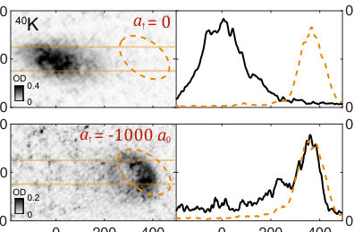
<figcaption class="paper-figure-caption"><b>Fig 1.</b> FIG. 1. Interaction-tunable cold-atom collider. (a) Fermionic 40K impurities (red) immersed in a highly oblate 23Na BEC initially prepared in |↓⟩(blue). A Raman π pulse transfers the condensate to |↑⟩(orange), imparting a lab-frame veloc- ity v0ˆx by the two-photon recoil and quenching the Na–K scattering length from a↓to a↑. The right inset shows the magnetic-field dependence of a↓and a↑; gray dashed lines mark the positions of two neighboring interspecies Feshbach resonances. (b) During the interaction time t1, the moving Na bath transfers momentum to the K impurities, which ac- quire the lab-frame velocity vI(t1)ˆx. The magnified schematic depicts the drag force Fdrag on an impurity and...</figcaption>
</figure>
<figure class="paper-figure-card">
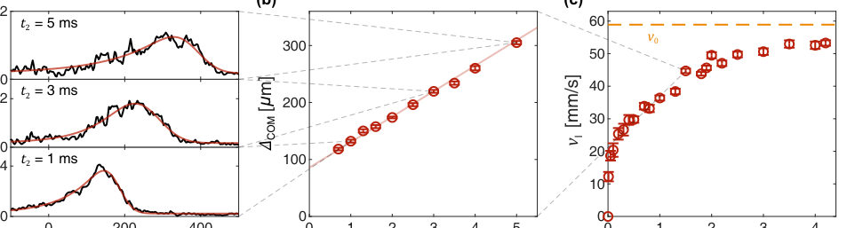
<figcaption class="paper-figure-caption"><b>Fig 2.</b> FIG. 2. Reconstruction of the impurity velocity. (a) One-dimensional impurity-density profiles at t2 = 1, 3, 5 ms (bottom to top) for t1 = 1.5 ms and a↑/a0 = −1000. Each profile is obtained from a single experimental realization; solid red curves show the fits [25]. (b) Impurity-COM displacement ∆COM as a function of t2. Each point is the mean of five realizations, with error bars denoting the 1σ standard error of the mean. The solid line is a linear fit whose slope yields the laboratory-frame impurity speed vI(t1). Note that the nonzero y-intercept reflects the impurity position at the end of t1. (c) Reconstructed vI(t1) for different interaction times t1. The yellow dashed line marks the...</figcaption>
</figure>
<figure class="paper-figure-card">
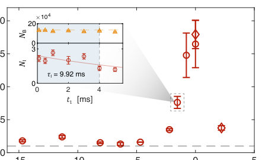
<figcaption class="paper-figure-caption"><b>Fig 3.</b> FIG. 4. Interaction dependence of the dynamical inertia. The inverse slope 1</figcaption>
</figure>
<figure class="paper-figure-card">
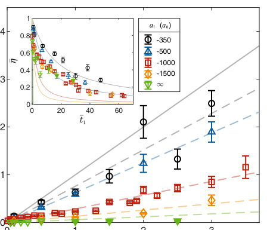
<figcaption class="paper-figure-caption"><b>Fig 4.</b> FIG. 3. Response of impurities to the drag force for various interaction strengths. In the inset, we plot the normalized relative speed ¯η(¯t1) as a function of the dimensionless time ¯t1 ≡4πℏ2nB</figcaption>
</figure>
<figure class="paper-figure-card">
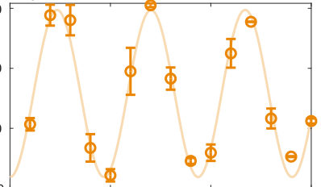
<figcaption class="paper-figure-caption"><b>Fig 5.</b> FIG. 5. Rabi oscillation between the |↓⟩|p = 0⟩and |↑⟩|p = 2ℏkRˆx⟩states of Na, driven by a pair of counterpropagating Raman beams, as a function of pulse duration. Here, p is the momentum of a Na atom. The solid line is a sinusoidal fit to the measured number of transferred atoms, from which we obtain the π-pulse duration quoted in the text. The mea- surement is performed on a Na-only sample, with no K atoms loaded. Error bars denote 1σ statistical uncertainties.</figcaption>
</figure>
</div>

<p><strong>Summary.</strong> This research explores the complex momentum and energy exchange between a rapidly moving impurity and a Bose-Einstein condensate. By tuning interactions near Feshbach resonances, the authors observed that the impurity's response deviates significantly from simple two-body predictions. This deviation signals a polaronic enhancement of the impurity's effective mass in the strongly coupled, supersonic regime.</p>
<p><strong>Why it may be interesting.</strong> This work directly addresses non-equilibrium dynamics in quantum gases, specifically the crossover between simple collision dynamics and strongly correlated, dressed quasiparticle behavior (polarons) in a supersonic regime.</p>
<details>
<summary>Detailed structure</summary>
<p><strong>Main problem.</strong> The study investigates how a mobile impurity exchanges momentum and energy with a many-body environment, especially when moving rapidly (supersonically) and strongly coupled to the bath.</p>
<p><strong>Main result.</strong> Near resonance, the impurity exhibits a marked enhancement of its apparent dynamical inertia, providing evidence for a polaronic response in the strongly coupled, supersonic regime.</p>
<p><strong>Method.</strong> The study combines experimental measurements of impurity velocity evolution with theoretical modeling based on two-body collision approximations and Bogoliubov theory.</p>
<p><strong>Model / system.</strong> The system is a cold-atom collider consisting of fermionic $^{40}	ext{K}$ impurities immersed in a $^{23}	ext{Na}$ Bose-Einstein condensate (BEC). The interactions are tuned using Feshbach resonances to explore varying coupling strengths.</p>
<p><strong>Key observables.</strong> Impurity velocity $v_I(t_1)$, apparent dynamical inertia ($1/s$), and momentum transfer signatures.</p>
<p><strong>Important parameters / regimes.</strong> Supersonic relative speed ($\approx 36$ times the speed of sound), interaction strength ($a_\uparrow$), and proximity to Feshbach resonances.</p>
<p><strong>Assumptions / limitations.</strong> The weak coupling regime is modeled by a finite-energy two-body collision model, and the strong coupling regime is analyzed by interpreting deviations from this model.</p>
<p><strong>Figures summary.</strong> Figures illustrate the experimental sequence, the reconstruction of impurity velocity vs. time, and plots comparing the measured drag response to the theoretical two-body collision model, showing the divergence near resonance.</p>
<p><strong>Paper structure.</strong> The paper establishes the physical problem, details the experimental setup using cold atoms, develops theoretical models for drag force in different coupling regimes, presents measurements showing agreement with simple models at weak coupling, and finally highlights the deviation near resonance as evidence for polaronic dressing.</p>
</details>
<details>
<summary>Abstract</summary>
<p>How a mobile impurity exchanges momentum and energy with a many-body environment is a central question in nonequilibrium quantum physics. This exchange becomes particularly complex when the impurity moves rapidly and is strongly coupled to its bath. Here, we realize an interaction-tunable cold-atom collider with fermionic $^{40}$K impurities immersed in a $^{23}$Na Bose--Einstein condensate. A species-selective Raman pulse simultaneously launches the condensate and quenches the interspecies scattering length, producing an initial relative speed 36 times the condensate speed of sound. We track the ensuing relative motion as the interspecies interaction is tuned from weak coupling to resonance. At weak and intermediate coupling, the impurity dynamics are well described by a finite-energy two-body collision model. Near resonance, however, the early-time impurity acceleration is markedly suppressed relative to the two-body prediction, corresponding to a strong enhancement of the apparent dynamical inertia. The enhancement is observed near two distinct Feshbach resonances. These observations provide evidence for a polaronic response in the strongly coupled, supersonic regime of a degenerate Bose--Fermi mixture.</p>
</details>
<p><sub><a href="#top">↑ back to top</a></sub></p>

<p><a id="paper-2610.08147"></a></p>
<h3 id="the-polarization-behavior-of-a-system-of-two-interacting-identical-spins-12-in-adiabatically-varying-magnetic-field"><a href="http://arxiv.org/abs/2610.08147v1">The polarization behavior of a system of two interacting identical spins 1/2 in adiabatically varying magnetic field</a></h3>
<p><strong>Authors:</strong> Yury Belousov, Dim Safin<br>
<strong>Type:</strong> theory · <strong>Category:</strong> quantum information and computing · <strong>PDF:</strong> <a href="https://arxiv.org/pdf/2610.08147v1">https://arxiv.org/pdf/2610.08147v1</a><br>
<strong>Analysis basis:</strong> full PDF text, analyzed in chunks
<strong>Topic relevance:</strong> <code>Keldysh / 2PI / non-Gaussian methods</code> <strong>3/5</strong> · <code>analog quantum simulation</code> <strong>3/5</strong> · <code>methods for driven-dissipative</code> <strong>3/5</strong> · <code>driven-dissipative phase transition</code> <strong>2/5</strong> · <code>non-equilibrium universality</code> <strong>2/5</strong> · <code>quantum measurements</code> <strong>2/5</strong> · <code>correlated / nonlocal dissipation</code> <strong>1/5</strong></p>
<div class="figure-strip-hint">↔ Scroll figures horizontally</div>
<div class="paper-figures-scroll">
<figure class="paper-figure-card">
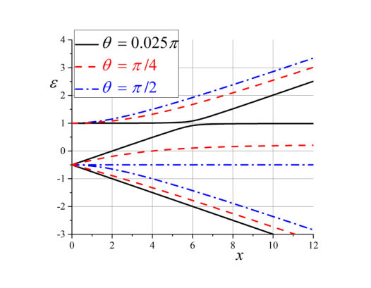
<figcaption class="paper-figure-caption"><b>Fig 1.</b> FIG. 1. Scheme of energy levels. Dependence on the external magnetic field for three different</figcaption>
</figure>
<figure class="paper-figure-card">
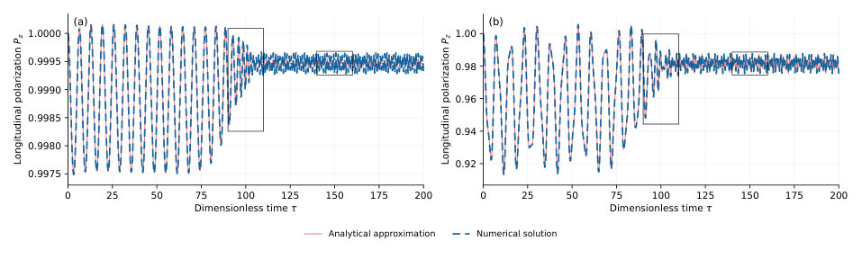
<figcaption class="paper-figure-caption"><b>Fig 2.</b> FIG. 2. Longitudinal polarization for (a) θ = 0.05π and (b) θ = π/8. Thin red solid curves show</figcaption>
</figure>
<figure class="paper-figure-card">
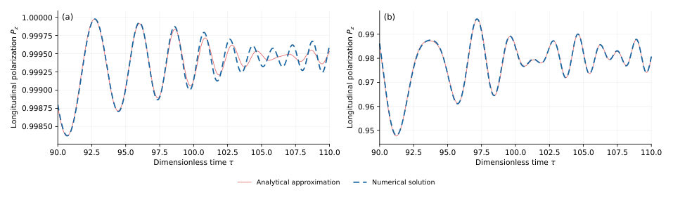
<figcaption class="paper-figure-caption"><b>Fig 3.</b> FIG. 3. Central interval 90 ≤τ ≤110 of the longitudinal polarization for (a) θ = 0.05π and (b)</figcaption>
</figure>
<figure class="paper-figure-card">
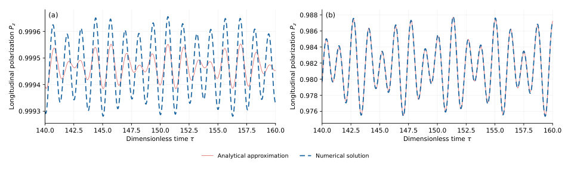
<figcaption class="paper-figure-caption"><b>Fig 4.</b> FIG. 4. Late interval 140 ≤τ ≤160 of the longitudinal polarization for (a) θ = 0.05π and (b)</figcaption>
</figure>
</div>

<p><strong>Summary.</strong> This theoretical work develops a specialized adiabatic representation for describing the time evolution of two interacting spin-1/2 particles in a changing magnetic field. By analyzing the density matrix in this representation, the authors show that entanglement fundamentally alters the observable polarization dynamics. This methodology is crucial for accurately modeling quantum systems where standard time-evolution techniques break down.</p>
<p><strong>Why it may be interesting.</strong> The rigorous application of the adiabatic representation to open quantum systems, especially when entanglement is involved, is highly relevant for controlling quantum states in solid-state or atomic platforms.</p>
<details>
<summary>Detailed structure</summary>
<p><strong>Main problem.</strong> The paper analyzes the polarization behavior of two interacting spin-1/2 particles subjected to an adiabatically varying external magnetic field.</p>
<p><strong>Main result.</strong> The study demonstrates that entangled states significantly modify the time evolution of physical observables like spin polarization, providing new avenues for quantum control.</p>
<p><strong>Method.</strong> The core method involves deriving and solving the Liouville equation in the adiabatic representation of the density matrix, which is necessary when standard interaction representations fail.</p>
<p><strong>Model / system.</strong> The system consists of two identical, spatially separated spin-1/2 particles coupled by a magnetic dipole-dipole interaction, whose dynamics are mapped onto pseudo-qutrit states.</p>
<p><strong>Key observables.</strong> Spin polarization of the pseudo-qutrit states, and the time evolution of density matrix components ($  ilde{
ho}_{ij}$).</p>
<p><strong>Important parameters / regimes.</strong> The time-varying magnetic field parameters ($\omega(t), \Omega(t)$), and the regime of entanglement.</p>
<p><strong>Assumptions / limitations.</strong> The analysis relies on the adiabatic approximation and often employs weak-coupling (Markovian) treatments for environmental relaxation effects.</p>
<p><strong>Figures summary.</strong> Figure 4 illustrates the longitudinal polarization ($P_z$) for different initial conditions, while appendices detail the transformed density matrix elements for thermal and laboratory preparation.</p>
<p><strong>Paper structure.</strong> The paper first introduces the adiabatic representation and the governing Liouville equation. It then develops the mathematical machinery to solve the time evolution, incorporating approximations for integrals and correlation functions, before presenting results on polarization dynamics.</p>
</details>
<details>
<summary>Abstract</summary>
<p>We derive the density matrix of a nonstationary system in the adiabatic representation and obtain the corresponding Liouville equation. This representation is particularly suitable when the standard interaction representation is inapplicable. We illustrate the approach with two identical, spatially separated spin-1/2 particles coupled by a magnetic dipole-dipole interaction in a slowly varying external magnetic field. Specifically, we analyze the spin polarization of pseudo-qutrit states in regimes where the states become entangled. The application of the adiabatic representation to calculate the dependence of observed physical quantities on time for quantum systems is illustrated. Our results show that entangled states can significantly modify the behavior of these observables and provide additional opportunities for their control.</p>
</details>
<p><sub><a href="#top">↑ back to top</a></sub></p>

<p><a id="paper-2610.08154"></a></p>
<h3 id="fluctuating-chemically-active-droplets"><a href="http://arxiv.org/abs/2610.08154v1">Fluctuating chemically active droplets</a></h3>
<p><strong>Authors:</strong> Guido L. A. Kusters, Noah Ziethen, Michael E. Cates, David Zwicker<br>
<strong>Type:</strong> theory · <strong>Category:</strong> statistical mechanics · <strong>PDF:</strong> <a href="https://arxiv.org/pdf/2610.08154v1">https://arxiv.org/pdf/2610.08154v1</a><br>
<strong>Analysis basis:</strong> full PDF text, analyzed in chunks
<strong>Topic relevance:</strong> <code>Keldysh / 2PI / non-Gaussian methods</code> <strong>3/5</strong> · <code>driven-dissipative phase transition</code> <strong>3/5</strong> · <code>methods for driven-dissipative</code> <strong>3/5</strong> · <code>non-equilibrium universality</code> <strong>3/5</strong> · <code>analog quantum simulation</code> <strong>1/5</strong> · <code>correlated / nonlocal dissipation</code> <strong>1/5</strong> · <code>quantum measurements</code> <strong>1/5</strong></p>
<div class="figure-strip-hint">↔ Scroll figures horizontally</div>
<div class="paper-figures-scroll">
<figure class="paper-figure-card">
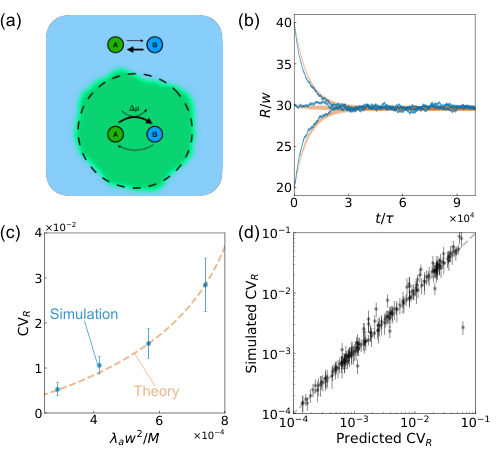
<figcaption class="paper-figure-caption"><b>Fig 1.</b> FIG. 1. Chemically active droplets with fluctuations. (a) Schematic of components A and B phase separating and converting into each other with external energy input ∆µ. (b) Droplet radius R as a function of time t from numerical simulations (blue lines) and our theoretical prediction (or- ange shade, one standard deviation confidence interval) for three initial sizes, where τ = κ/Mb2. (c) Steady-state coeffi- cient of variation CVR = p</figcaption>
</figure>
<figure class="paper-figure-card">
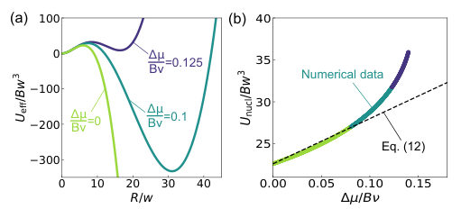
<figcaption class="paper-figure-caption"><b>Fig 2.</b> FIG. 2. Active reactions suppress nucleation. (a) Effec- tive non-equilibrium potential Ueff as a function of droplet radius R for various drives ∆µ. Ueff either has a single maximum (green line), a maximum and a stable minimum (teal line), or a maximum and a metastable minimum (pur- ple line). (b) Nucleation barrier Unucl as a function of ∆µ compared to Eq. (12) (black dashed line). Model parameters are εout = −0.05 bν, εin = −0.05 bν + ∆µ∆φ, γ = 0.15 bw, lin = 11 w, lout = 18 w, and ∆φ = 1.</figcaption>
</figure>
</div>

<p><strong>Summary.</strong> This paper theoretically investigates how chemical reactions affect the size fluctuations and stability of phase-separated droplets. By coupling deterministic growth models with stochastic noise derived from fluctuation-dissipation theorems, the authors derive an effective potential. They demonstrate that active chemical reactions can stabilize the system by suppressing the nucleation rate.</p>
<p><strong>Why it may be interesting.</strong> The methodology of deriving an effective non-equilibrium potential from underlying field dynamics and noise statistics is highly relevant to open quantum systems and non-equilibrium statistical mechanics.</p>
<details>
<summary>Detailed structure</summary>
<p><strong>Main problem.</strong> The study focuses on understanding the size fluctuations and nucleation dynamics of chemically active droplets operating in the regime of weak reactions and strong phase separation.</p>
<p><strong>Main result.</strong> The authors derive an effective non-equilibrium potential governing droplet growth and show that active reactions can suppress nucleation by increasing the nucleation barrier.</p>
<p><strong>Method.</strong> The analysis combines a thin-interface model for deterministic growth with stochastic noise derived from fluctuation-dissipation arguments, leading to a Langevin equation for the droplet radius.</p>
<p><strong>Model / system.</strong> The system is an incompressible, binary fluid undergoing phase separation and chemical reactions, modeled by continuity and flux equations. The dynamics are reduced to a Langevin equation for the droplet radius R.</p>
<p><strong>Key observables.</strong> Droplet radius fluctuations R(t), Coefficient of Variation (CVR), and the effective non-equilibrium potential U_eff(R).</p>
<p><strong>Important parameters / regimes.</strong> Reaction rates (lambda_p, lambda_a), chemical potential differences (Delta_mu), and the degree of activity (Delta_mu).</p>
<p><strong>Assumptions / limitations.</strong> The analysis assumes weak reactions and strong phase separation, and that the interface moves slowly compared to the relaxation of the order parameter.</p>
<p><strong>Figures summary.</strong> Figures illustrate the comparison between theoretical and simulated droplet size fluctuations, the dependence of CVR on reaction rates, and the effective potential U_eff(R) and nucleation barrier U_nucl for different driving conditions.</p>
<p><strong>Paper structure.</strong> The paper progresses by establishing the governing equations, deriving the Langevin equation for fluctuations, calculating the effective potential U_eff(R) using fluctuation-dissipation theorems, and finally applying this potential to calculate the nucleation barrier under active reaction conditions.</p>
</details>
<details>
<summary>Abstract</summary>
<p>We study size fluctuations of chemically active droplets in the regime of weak reactions and strong phase separation. By combining a thin-interface model for the deterministic droplet growth with stochastic noise based on fluctuation-dissipation arguments, we report excellent quantitative agreement between our theory and numerical field simulations. Finally, we use our model to infer the effective non-equilibrium potential that governs droplet growth, and show that active reactions that enable size control suppress nucleation.</p>
</details>
<p><sub><a href="#top">↑ back to top</a></sub></p>

<p><a id="paper-2610.08423"></a></p>
<h3 id="hamiltonian-curl-forces-in-systems-coupled-to-multiple-thermal-reservoirs"><a href="http://arxiv.org/abs/2610.08423v1">Hamiltonian curl-forces in systems coupled to multiple thermal reservoirs</a></h3>
<p><strong>Authors:</strong> Omer Chor, Aljaž Godec, Oren Raz<br>
<strong>Type:</strong> theory · <strong>Category:</strong> statistical mechanics · <strong>PDF:</strong> <a href="https://arxiv.org/pdf/2610.08423v1">https://arxiv.org/pdf/2610.08423v1</a><br>
<strong>Analysis basis:</strong> full PDF text, analyzed in chunks
<strong>Topic relevance:</strong> <code>Keldysh / 2PI / non-Gaussian methods</code> <strong>3/5</strong> · <code>driven-dissipative phase transition</code> <strong>3/5</strong> · <code>methods for driven-dissipative</code> <strong>3/5</strong> · <code>non-equilibrium universality</code> <strong>3/5</strong> · <code>correlated / nonlocal dissipation</code> <strong>2/5</strong> · <code>quantum measurements</code> <strong>1/5</strong></p>
<div class="figure-strip-hint">↔ Scroll figures horizontally</div>
<div class="paper-figures-scroll">
<figure class="paper-figure-card">
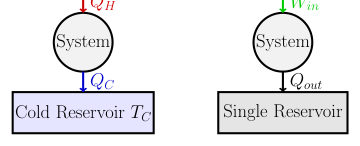
<figcaption class="paper-figure-caption"><b>Fig 1.</b> FIG. 1: Schematic comparison of the original and transformed systems. (a) The original, multi-reservoir system (illustrated for two, but the formalism is general and applies to any number of reservoirs), with heat flowing between the reservoirs through the system. (b) The transformed, single reservoir system, is driven out of equilibrium by a non-conservative curl-force that performs work on it. The work is dissipated into the single reservoir as heat.</figcaption>
</figure>
<figure class="paper-figure-card">
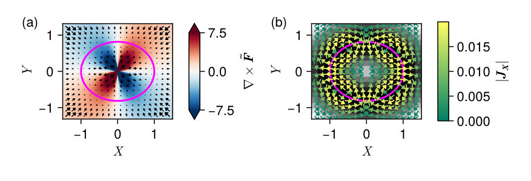
<figcaption class="paper-figure-caption"><b>Fig 2.</b> FIG. 2: (a) The force field ˜F = m ¨X of the single-bath system dual to the ring gyrator (arrows), and the value of its curl ∇× ˜F (color), for k = 20, r0 = 1, Tx = 1, Ty = 3/2. Unlike the case of the harmonically confined Brownian gyrator, here ∇× ˜F is not constant, and has a quadrupolar structure instead. (b) Simulation results for the probability density and currents averaged over 25,000 Langevin trajectories of the same system coupled to a bath with temperature kB ˜T = 1 and drag coefficient ξ = 1. The steady state probability density function is shown in the background (white - low density, black - high density). The arrows indicate the empirical spatial probability current JX =...</figcaption>
</figure>
</div>

<p><strong>Summary.</strong> This paper analyzes the statistical mechanics of systems coupled to multiple heat baths at different temperatures, showing that this coupling generates non-equilibrium steady states. The authors map this complex system onto an effective single-bath description driven by a deterministic curl-force. This framework provides a mechanical understanding of non-equilibrium currents and quantifies the system's departure from equilibrium via the entropy production rate.</p>
<p><strong>Why it may be interesting.</strong> This work provides a powerful mechanical interpretation of non-equilibrium thermodynamics, showing how multi-temperature baths manifest as deterministic, non-conservative forces, which is highly relevant for understanding energy flow in open quantum systems.</p>
<details>
<summary>Detailed structure</summary>
<p><strong>Main problem.</strong> Investigating the statistical mechanics of systems coupled to multiple heat reservoirs at different temperatures, a setting that typically sustains non-trivial circulation and drives the system out of equilibrium.</p>
<p><strong>Main result.</strong> The multi-reservoir dynamics can be mapped onto an effective single-bath system driven by a deterministic curl-force, leading to non-equilibrium steady states (NESS) characterized by non-zero entropy production.</p>
<p><strong>Method.</strong> The authors employ a canonical transformation to map the complex multi-reservoir coupling onto a simpler, effective Hamiltonian structure featuring an anisotropic kinetic energy and a curl-force.</p>
<p><strong>Model / system.</strong> The model is a classical open system (e.g., underdamped Brownian particle) whose dynamics are governed by a generalized Klein-Kramers equation describing coupling to multiple baths at different temperatures ($T_i$).</p>
<p><strong>Key observables.</strong> Entropy Production Rate (EPR), steady-state distribution, and the curl of the effective force field ($
abla    imes    ilde{F}$).</p>
<p><strong>Important parameters / regimes.</strong> Multiple reservoir temperatures ($T_i$), damping coefficient ($\xi$), and the mass ($m$).</p>
<p><strong>Assumptions / limitations.</strong> The analysis relies on mapping the system dynamics and assumes the validity of the canonical transformation, though the resulting steady state is generally not the simple Boltzmann distribution.</p>
<p><strong>Figures summary.</strong> Not specified by the notes.</p>
<p><strong>Paper structure.</strong> The paper first establishes the non-equilibrium nature of multi-reservoir coupling, then applies a canonical transformation to derive an effective single-bath description driven by a curl-force. Finally, explicit derivations for the steady-state distribution and EPR are provided for solvable cases.</p>
</details>
<details>
<summary>Abstract</summary>
<p>We investigate the statistical mechanics of a system coupled to multiple heat reservoirs at different temperatures, a setting which typically sustains nontrivial circulation. By applying a canonical transformation, we map the system onto that of a particle coupled to a single reservoir yet driven by a deterministic curl-force---a reversible, velocity-independent non-conservative force with non-vanishing curl---that can be described by a Hamiltonian with an anisotropic kinetic energy term. Despite the Hamiltonian structure, the system does not relax to the corresponding Boltzmann distribution, and is genuinely out of equilibrium. The mapping provides a mechanical interpretation of the currents in multi-temperature systems, as we demonstrate by means of two examples. In particular, the direction of circulation is qualitatively predictable from the deterministic force field. For the exactly solvable case of an $N$-dimensional underdamped Ornstein-Uhlenbeck process, we derive explicit expressions for the steady-state distribution and the entropy production rate, highlighting the role of the (generalized) curl of the force field in driving the system out of thermal equilibrium. Finally, we show how a non-conservative force can be used to exactly equilibrate any system coupled to multiple reservoirs, and obtain the corresponding equilibrium distribution.</p>
</details>
<p><sub><a href="#top">↑ back to top</a></sub></p>

<p><a id="paper-2610.08022"></a></p>
<h3 id="heterogeneous-diffusion-with-recruitment-and-mortality"><a href="http://arxiv.org/abs/2610.08022v1">Heterogeneous diffusion with recruitment and mortality</a></h3>
<p><strong>Authors:</strong> Esther D. Gutiérrez, Alexander López, R. K. Singh, Sébastien Fumeron, Malte Henkel, Trifce Sandev<br>
<strong>Type:</strong> theory · <strong>Category:</strong> statistical mechanics · <strong>PDF:</strong> <a href="https://arxiv.org/pdf/2610.08022v1">https://arxiv.org/pdf/2610.08022v1</a><br>
<strong>Analysis basis:</strong> full PDF text, analyzed in chunks
<strong>Topic relevance:</strong> <code>driven-dissipative phase transition</code> <strong>3/5</strong> · <code>non-equilibrium universality</code> <strong>3/5</strong> · <code>Keldysh / 2PI / non-Gaussian methods</code> <strong>2/5</strong> · <code>methods for driven-dissipative</code> <strong>2/5</strong> · <code>analog quantum simulation</code> <strong>1/5</strong> · <code>correlated / nonlocal dissipation</code> <strong>1/5</strong> · <code>quantum measurements</code> <strong>1/5</strong></p>
<div class="figure-strip-hint">↔ Scroll figures horizontally</div>
<div class="paper-figures-scroll">
<figure class="paper-figure-card">
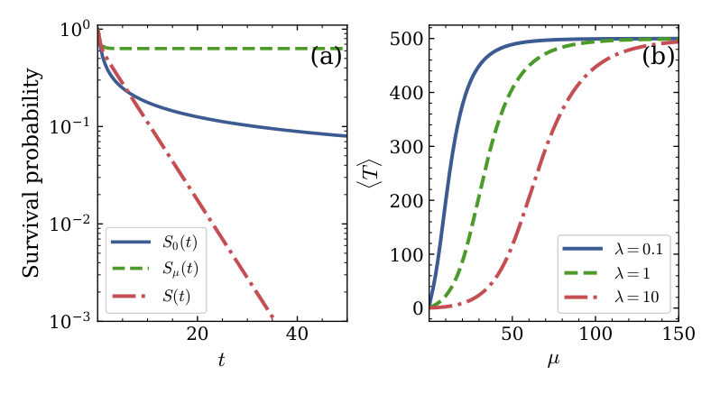
<figcaption class="paper-figure-caption"><b>Fig 1.</b> Figure 1: Numerical evaluation of the first-passage properties of the heterogeneous diffusion process with mortality and recruitment, in dimensionless units. (a) Survival probability of the underlying HDP, S0(t); of a single mortal trajectory without recruitment, Sµ(t) [Eq. (21)]; and of the full recruitment–mortality process, S(t) [Eq. (18)], for fixed mortality and recruitment rates. (b) Numerical mean first-passage time ⟨T⟩as a function of the mortality rate µ, for three fixed values of the recruitment rate λ. The three curves represent the regimes µ &gt; λ, µ = λ, and µ &lt; λ when compared with the reference value µ = 1.0 used in panel (a). The mean first-passage time in panel (b) was...</figcaption>
</figure>
<figure class="paper-figure-card">
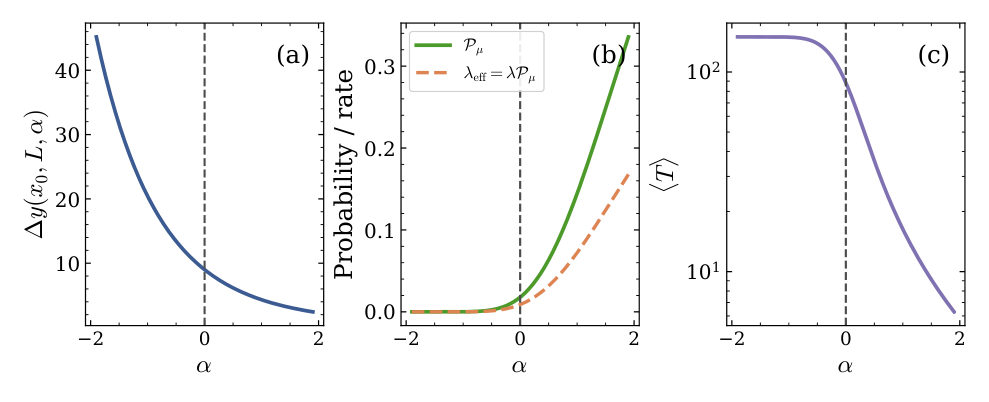
<figcaption class="paper-figure-caption"><b>Fig 2.</b> Figure 2: Effect of the heterogeneity exponent α on the first-passage properties, in dimension- less units. The physical initial position and target position are fixed at x0 = 1 and L = 10, so that the α-dependence enters entirely through the effective distance ∆y(x0, L, α) [Eq.(22)]. (a) ∆y decreases monotonically with α, reflecting how larger heterogeneity makes the target dynamically closer to the starting point. (b) Single-trajectory success probability Pµ [Eq.(23)] and the corresponding effective long-time decay rate λeff = λPµ [Eq. (26)], both increasing with α as the effective distance to the target shrinks. (c) Mean first-passage time ⟨T⟩which shows a crossover from an almost...</figcaption>
</figure>
<figure class="paper-figure-card">
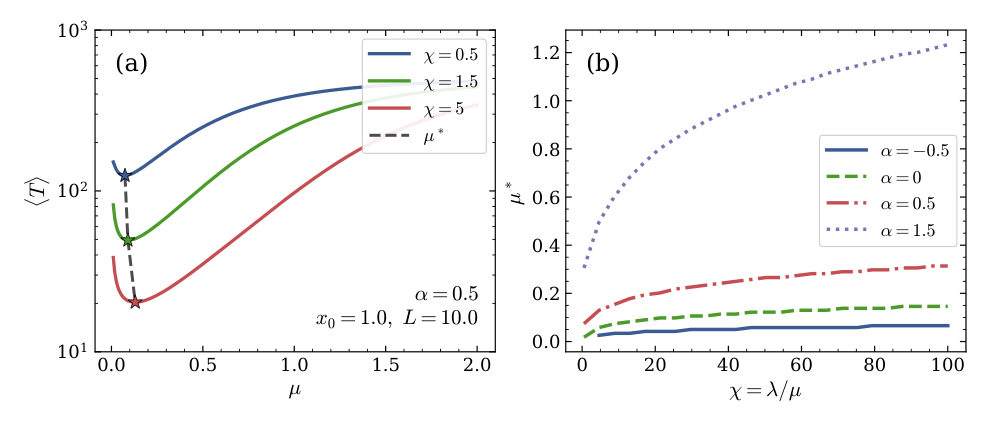
<figcaption class="paper-figure-caption"><b>Fig 3.</b> Figure 3: Optimal mortality rate in the first-passage time properties of the heterogeneous diffusion process with recruitment and mortality, in dimensionless units, for fixed initial and target positions x0 = 1, L = 10. (a) Mean first-passage time ⟨T⟩as a function of the mortality rate µ, for different values of the recruitment–mortality ratio χ = λ/µ, at fixed heterogeneity exponent α = 0.5. For each curve, the recruitment rate is set as λ = χµ. Every curve shows a well-defined minimum, confirming the existence of an optimal mortality rate µ∗that minimizes the mean first-passage time; star markers indicate the numerically obtained minima, and the dashed curve traces the locus of µ∗as χ is...</figcaption>
</figure>
<figure class="paper-figure-card">
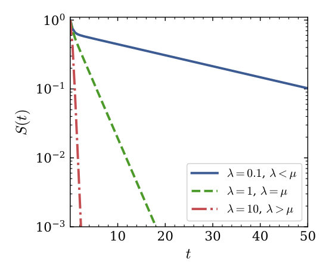
<figcaption class="paper-figure-caption"><b>Fig 4.</b> Figure 4: Effect of the recruitment rate λ on the full recruitment–mortality survival probability S(t), for fixed mortality rate µ = 1.0, in dimensionless units. The three curves correspond to representative regimes with λ &lt; µ, λ = µ, and λ &gt; µ. Increasing λ accelerates the decay of Sλ,µ(t) because each recruited trajectory provides an additional independent attempt to reach the target. Parameters: ∆y = 1 and Dα = 1.</figcaption>
</figure>
<figure class="paper-figure-card">
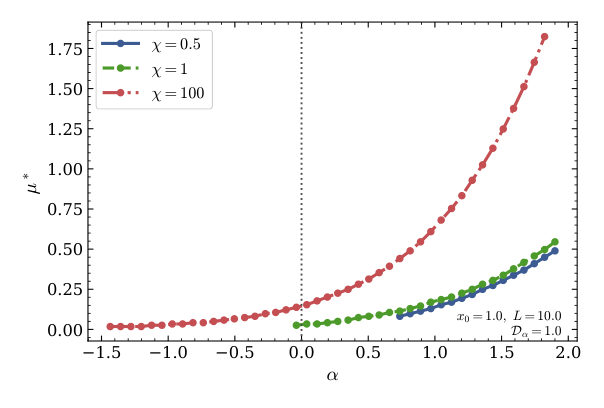
<figcaption class="paper-figure-caption"><b>Fig 5.</b> Figure 5: Optimal mortality rate µ∗as a function of the heterogeneity exponent α, for selected values of the recruitment-to-mortality ratio χ, in dimensionless units. For each value of α, the effective distance ∆y(x0, L, α) is computed for fixed x0 = 1 and L = 10, and Dα = 1. The optimal mortality rate is obtained by minimizing the numerical mean first-passage time over the mortality parameter µ.</figcaption>
</figure>
</div>

<p><strong>Summary.</strong> This work models diffusion in an open environment subject to particle creation (recruitment) and decay (mortality). It establishes that the system reaches a stable, non-equilibrium state characterized by a saturated Mean Squared Displacement. Crucially, it reveals a 'mortality-assisted search' effect, showing that intermediate decay rates can optimize the speed of reaching a target region.</p>
<p><strong>Why it may be interesting.</strong> The framework of open systems with particle creation/destruction and anomalous diffusion is highly relevant to modeling non-equilibrium dynamics in complex physical systems, which shares mathematical structures with open quantum systems.</p>
<details>
<summary>Detailed structure</summary>
<p><strong>Main problem.</strong> The paper investigates heterogeneous diffusion in open systems characterized by continuous particle creation (recruitment) and destruction (mortality). It analyzes how these processes affect transport properties and search times.</p>
<p><strong>Main result.</strong> The system reaches a non-equilibrium stationary state where the Mean Squared Displacement saturates to a value independent of the recruitment rate. Furthermore, a moderate mortality rate can counter-intuitively accelerate the arrival of an infection at a new spatial region.</p>
<p><strong>Method.</strong> The analysis involves deriving the probability density function and survival probabilities using modified Fokker-Planck equations and the dynamic redundancy framework. Long-time asymptotic behavior is analyzed using Laplace approximations.</p>
<p><strong>Model / system.</strong> The model is a Heterogeneous Diffusion Process (HDP) with a position-dependent diffusion coefficient $D(x) \propto |x|^\alpha$. The process is open, incorporating independent recruitment ($\lambda$) and mortality ($\mu$) rates.</p>
<p><strong>Key observables.</strong> Mean Squared Displacement ($\langle x^2(t) 
angle$), survival probability $S(t)$, and mean first-passage time $\langle T 
angle$.</p>
<p><strong>Important parameters / regimes.</strong> Heterogeneity exponent ($\alpha$), recruitment rate ($\lambda$), and mortality rate ($\mu$).</p>
<p><strong>Assumptions / limitations.</strong> The analysis assumes a specific power-law form for the diffusion coefficient $D(x)$ and relies on approximations like the Laplace method for long-time limits.</p>
<p><strong>Figures summary.</strong> Figures illustrate the saturation of survival probabilities ($S(t)$) and the non-monotonic dependence of the mean first-passage time ($\langle T 
angle$) on the mortality rate ($\mu$), showing an optimal rate exists.</p>
<p><strong>Paper structure.</strong> The paper progresses from deriving the governing equations for the open HDP, calculating the long-time saturation of the MSD, analyzing the first-passage time using survival probabilities, and finally applying the framework to physical examples like epidemiology.</p>
</details>
<details>
<summary>Abstract</summary>
<p>We study a heterogeneous diffusion process with a position-dependent diffusion coefficient in the presence of independent recruitment and mortality. This framework generalises heterogeneous diffusion under stochastic resetting, which is recovered as the special case of equal recruitment and mortality rates. At long times, the system approaches a non-equilibrium stationary state with a mean squared displacement that saturates to a value independent of the recruitment rate. Crucially, this saturation limit directly encodes the underlying transport regime via an effective exponent applied to the diffusion coefficient, and we characterise the non-trivial transition to this stationary regime. We further derive the mean first-passage time to a target and show that, for a fixed recruitment-to-mortality ratio, an optimal mortality rate minimises the search time. This "mortality-assisted search" effect is confirmed by numerical evaluation. Reinterpreting recruitment and mortality as infection and removal processes, we apply the model to epidemic spreading and show that a moderate removal rate can counter-intuitively accelerate, rather than delay, the arrival of infection at a new spatial region. Beyond epidemiology, our framework offers broad relevance to systems featuring concurrent particle creation and destruction, such as bacterial growth, tracer diffusion in reactive fluids, or cellular population dynamics in crowded environments.</p>
</details>
<p><sub><a href="#top">↑ back to top</a></sub></p>

<p><a id="paper-2610.08710"></a></p>
<h3 id="entanglement-sudden-death-eberlys-work-and-the-limits-of-local-dynamics"><a href="http://arxiv.org/abs/2610.08710v1">Entanglement Sudden Death: Eberly's Work and the Limits of Local Dynamics</a></h3>
<p><strong>Authors:</strong> Abhaya S. Hegde, Songbo Xie<br>
<strong>Type:</strong> theory · <strong>Category:</strong> quantum information and computing · <strong>PDF:</strong> <a href="https://arxiv.org/pdf/2610.08710v1">https://arxiv.org/pdf/2610.08710v1</a><br>
<strong>Analysis basis:</strong> full PDF text, analyzed in chunks
<strong>Topic relevance:</strong> <code>correlated / nonlocal dissipation</code> <strong>3/5</strong> · <code>analog quantum simulation</code> <strong>2/5</strong> · <code>driven-dissipative phase transition</code> <strong>2/5</strong> · <code>methods for driven-dissipative</code> <strong>2/5</strong> · <code>non-equilibrium universality</code> <strong>2/5</strong> · <code>Keldysh / 2PI / non-Gaussian methods</code> <strong>1/5</strong></p>
<div class="figure-strip-hint">↔ Scroll figures horizontally</div>
<div class="paper-figures-scroll">
<figure class="paper-figure-card">
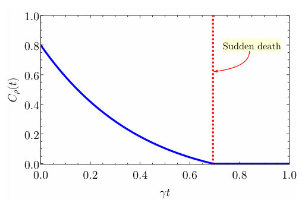
<figcaption class="paper-figure-caption"><b>Fig 1.</b> FIG. 1. Concurrence from Eq. (11). The dashed red vertical line marks the time at which entanglement vanishes abruptly and completely.</figcaption>
</figure>
<figure class="paper-figure-card">
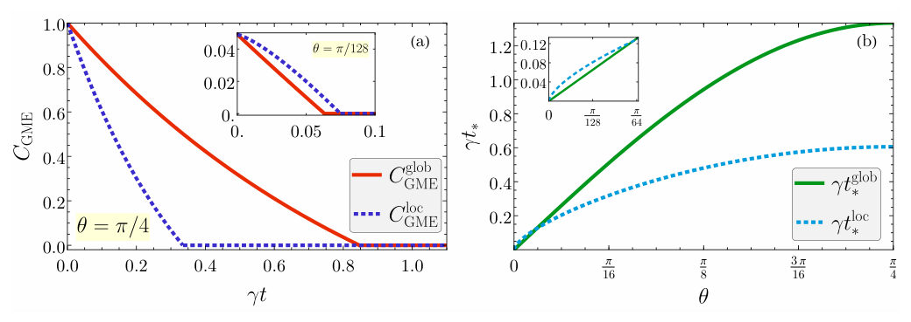
<figcaption class="paper-figure-caption"><b>Fig 2.</b> FIG. 2. (a) Concurrence as a function of time for GHZ state initialized in maximally entangled state. The solid red line refers to dynamics under global depolarization and the dotted blue represents qubits subjected to independent depolarization. While independently depolarized states lose tripartite genuine entanglement faster than global white noise for this initial state, for sufficiently weakly entangled states, such as θ = π/128, have opposite order in which dynamics retains genuine correlations longer, as shown inset. (b) Entanglement sudden death time as a function amount of initial entanglement parametrized by the superposition angle θ in the initial GHZ state.</figcaption>
</figure>
</div>

<p><strong>Summary.</strong> This paper explores Entanglement Sudden Death (ESD), demonstrating that the abrupt loss of entanglement in multipartite systems is highly sensitive to the noise model applied. By comparing global versus local depolarization on GHZ states, the authors prove that the entanglement lifetime depends on the joint evolution, not just the local dynamics. This highlights that understanding entanglement requires analyzing the entire composite system state.</p>
<p><strong>Why it may be interesting.</strong> This work is highly relevant to AMO physics and open quantum systems as it provides a rigorous, quantitative comparison of how different noise assumptions affect the fundamental persistence of quantum correlations in multi-particle systems.</p>
<details>
<summary>Detailed structure</summary>
<p><strong>Main problem.</strong> The paper investigates Entanglement Sudden Death (ESD), the phenomenon where entanglement vanishes abruptly at a finite time despite the underlying system dynamics remaining smooth.</p>
<p><strong>Main result.</strong> The lifetime of genuine multipartite entanglement depends critically on the nature of the noise (global vs. local), showing that local dynamics alone do not determine the ESD time or its scaling with system size.</p>
<p><strong>Method.</strong> The authors analyze entanglement decay using measures like concurrence for both bipartite and multipartite systems, comparing dynamics under different noise models.</p>
<p><strong>Model / system.</strong> The study models open quantum systems, specifically using N-qubit GHZ states subjected to different types of environmental noise, such as independent local depolarization versus global depolarization.</p>
<p><strong>Key observables.</strong> Concurrence, genuine multipartite entanglement, and the ESD time scale.</p>
<p><strong>Important parameters / regimes.</strong> System size N, and the relative strength of local versus global noise coupling.</p>
<p><strong>Assumptions / limitations.</strong> The 'suddenness' refers only to the finite time of entanglement vanishing, not a sudden change in the density matrix evolution itself.</p>
<p><strong>Figures summary.</strong> The notes reference figures comparing the ESD times for global versus independent local depolarization for N=3 qubits.</p>
<p><strong>Paper structure.</strong> The paper revisits the concept of ESD from bipartite systems to genuine multipartite entanglement, first illustrating the mechanism with two qubits, and then comparing the ESD times for N-qubit GHZ states under global versus local depolarization.</p>
</details>
<details>
<summary>Abstract</summary>
<p>Entanglement sudden death (ESD), explored through a series of works by Yu and Eberly, supports the notion of entanglement vanishing abruptly and completely at a finite time, even when the underlying open-system dynamics remain smooth. In this article, we revisit the development of ESD from bipartite origins to genuine multipartite entanglement. We first illustrate the canonical mechanism of ESD with two independently damped qubits, for which the concurrence vanishes at a finite time while populations and coherences remain nonzero. We next present our results on multipartite entanglement for generalized GHZ states under depolarization. Global and independent local depolarizing dynamics can be chosen to produce identical reduced evolution for every individual qubit, yet they yield different genuine-multipartite-entanglement sudden death times, whose ordering can reverse with the initial state. For N-qubit GHZ states, this distinction becomes asymptotically stronger since the ESD time scales as 1/N under independent local depolarization, whereas under global depolarization it approaches a finite value in the thermodynamic limit. Echoing a central lesson of Prof. Eberly's work, we report the lifetime of multipartite entanglement is not fixed by the local dynamics, but rather depends on the evolution of the joint quantum state.</p>
</details>
<p><sub><a href="#top">↑ back to top</a></sub></p>

<p><a id="paper-2610.07680"></a></p>
<h3 id="spectroscopy-using-dipole-phonon-quantum-logic"><a href="http://arxiv.org/abs/2610.07680v1">Spectroscopy using dipole-phonon quantum logic</a></h3>
<p><strong>Authors:</strong> Lu Qi, Evan C. Reed, Duanyang Wang, Boyan Yu, Kenneth R. Brown<br>
<strong>Type:</strong> experiment · <strong>Category:</strong> other · <strong>PDF:</strong> <a href="https://arxiv.org/pdf/2610.07680v1">https://arxiv.org/pdf/2610.07680v1</a><br>
<strong>Analysis basis:</strong> full PDF text, analyzed in chunks
<strong>Topic relevance:</strong> <code>QC/QI experiment</code> <strong>3/5</strong> · <code>quantum measurements</code> <strong>3/5</strong> · <code>quantum optics experiment</code> <strong>3/5</strong> · <code>Tavis-Cummings &amp; cavity-many-emitter</code> <strong>2/5</strong> · <code>analog quantum simulation</code> <strong>1/5</strong></p>
<div class="figure-strip-hint">↔ Scroll figures horizontally</div>
<div class="paper-figures-scroll">
<figure class="paper-figure-card">
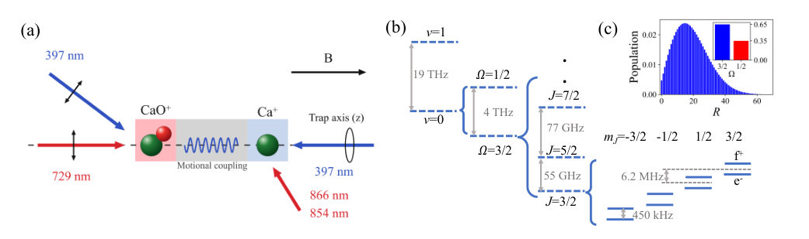
<figcaption class="paper-figure-caption"><b>Fig 1.</b> FIG. 1. Experimental schematic and the energy structure and population distribution of CaO+ at room temperature. (a) A schematic of the experimental setup for the demonstration of dipole-phonon quantum logic. A single CaO+ and Ca+ are trapped along the trap axis. The schematic is not to scale; the ions are enlarged for clarity. A magnetic field of 6.2 G is aligned to the trap axis (z) to provide the quantization axis and break state degeneracies. The ion chain is shown in a top view, together with the laser wavelengths and orientations. The linearly polarized 397 nm beam and the 866 nm beam are used for Doppler cooling. EIT cooling uses both the linearly polarized and the σ-polarized 397 nm...</figcaption>
</figure>
<figure class="paper-figure-card">
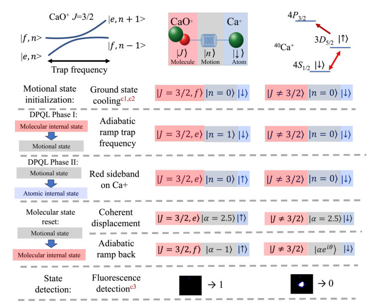
<figcaption class="paper-figure-caption"><b>Fig 2.</b> FIG. 2. Experimental sequence for DPQL. The avoided crossing on the top left shows the state trajectories in the adiabatic passage operation. The energy structure of Ca+ on the top right illustrates the atomic qubit states used in the experiment. Shown here is every step of the experiment as well as the corresponding state changes of the molecular ion (both J = 3/2 and J ̸= 3/2), motion, and atomic ion. The results of single shot measurements of the Ca+ ion are assigned the values of 1 for dark and 0 for bright. c1: Dark ion mass check. c2: Prior selection check of Ca+ fluorescence. c3: Posterior selection check operation. See text for details.</figcaption>
</figure>
<figure class="paper-figure-card">
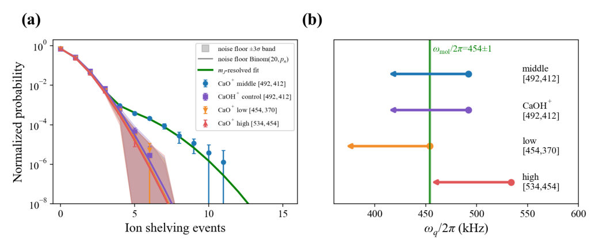
<figcaption class="paper-figure-caption"><b>Fig 3.</b> FIG. 3. Dipole-phonon signal and the frequency-scan geometry. (a) Normalized probability of observing a given number of ion-shelving events in 20-experiment windows, for all four datasets: the CaO+ middle range (blue circles), the CaOH+ control molecule over the same range (purple squares), and the CaO+ low (orange down triangles) and high (red up triangles) ranges. Each is shown with its own noise floor (gray line, binomial at that dataset’s false-positive rate pn) and the ±3σ spread obtained from scrambled detection records (gray band). The green curve is the mJ-resolved fit to the CaO+ middle-range data, with a total ground-rotational-state population of 0.60+0.14 −0.11% and a per-event...</figcaption>
</figure>
<figure class="paper-figure-card">
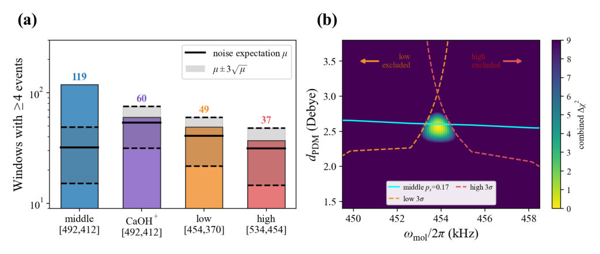
<figcaption class="paper-figure-caption"><b>Fig 4.</b> FIG. 4. Statistical significance and the joint frequency–coupling constraint. (a) Number of 20-experiment windows containing ≥4 ion-shelving events for each dataset. Experimental values are denoted by the height of the colored bars and the number. The solid black line is the average count, µ, expected from that dataset’s noise floor and the shaded band is µ ± 3√µ. The noise floor is evaluated run by run and then combined over all runs of the dataset to calculate µ (Appendix C 1). (b) Joint constraint on the effective dipole-phonon coupling dPDM and the doublet frequency ωmol. The color is the combined ∆χ2 of Appendix C 3, which compares the simulated per-event signal of each range with the...</figcaption>
</figure>
<figure class="paper-figure-card">
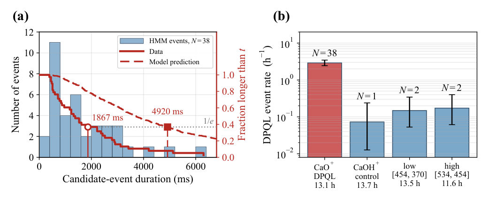
<figcaption class="paper-figure-caption"><b>Fig 5.</b> FIG. 5. Signals identified by the parameter-free HMM. (a) Durations of the 38 candidate events found in the CaO+ DPQL search data. Left axis: histogram, bin width 400 ms. Right axis: the survival function of the data (solid) and of the model prediction (dashed), the latter obtained by decoding the Monte-Carlo simulation with the same HMM and the same dual- threshold criterion. Markers give the 1/e crossing of each, 1867 ms and 4920 ms. (b) Event rate of each dataset under the same dual-threshold criterion (boundaries at posterior 0.5, selection at peak posterior ≥0.9), with 68% Poisson intervals. The two off-resonant ranges supply the background reference.</figcaption>
</figure>
</div>

<p><strong>Summary.</strong> This paper reports the first experimental use of Dipole-Phonon Quantum Logic (DPQL) spectroscopy on $  ext{CaO}^+$ ions to measure the frequency splitting of its ground state. By analyzing signal patterns across multiple motional frequency ramps, the authors determined the splitting to be $2\pi 	imes 454 \pm 1$ kHz. The methodology combines advanced trapped-ion cooling techniques with sophisticated statistical analysis to achieve high-precision quantum characterization.</p>
<p><strong>Why it may be interesting.</strong> This work is highly interesting as it pushes the boundaries of quantum sensing by applying a sophisticated quantum logic protocol (DPQL) to measure fundamental molecular properties ($\omega_{	ext{mol}}$) in a trapped-ion platform, bridging quantum optics, molecular physics, and quantum information.</p>
<details>
<summary>Detailed structure</summary>
<p><strong>Main problem.</strong> The primary goal was to demonstrate Dipole-Phonon Quantum Logic (DPQL) as a novel spectroscopic tool to precisely measure the frequency splitting ($\omega_{	ext{mol}}$) of the ground $\Omega$-doublet of the $    ext{CaO}^+$ molecular ion.</p>
<p><strong>Main result.</strong> The experiment successfully measured the molecular splitting frequency to be $\omega_{	ext{mol}} = 2\pi 	imes 454 \pm 1$ kHz, and also determined the effective dipole-phonon coupling strength ($d_{	ext{PDM}}$).</p>
<p><strong>Method.</strong> The measurement relied on adiabatically ramping the motional trap frequency ($\omega_q$) while monitoring the resulting signal/null pattern across three overlapping frequency ranges, analyzed using advanced statistical methods like Hidden Markov Models (HMM).</p>
<p><strong>Model / system.</strong> The physical system is an ion chain ($  ext{CaO}^+$-$   ext{Ca}^+$) trapped in a linear trap. The underlying physics is modeled by an interaction Hamiltonian resembling the Jaynes-Cummings model, describing the coupling between the molecular dipole and the quantized motional phonon mode.</p>
<p><strong>Key observables.</strong> The key observables are the signal/null pattern across three frequency ramps, the measured shelving probability ($p_s$), and the derived molecular splitting frequency ($\omega_{	ext{mol}}$).</p>
<p><strong>Important parameters / regimes.</strong> The measured splitting is $\omega_{	ext{mol}} = 2\pi 	imes 454 \pm 1$ kHz, and the coupling strength was determined to be $d_{	ext{PDM}} = 2.56 \pm 0.07$ Debye.</p>
<p><strong>Assumptions / limitations.</strong> The analysis assumes the validity of the Jaynes-Cummings Hamiltonian and relies on statistical modeling (HMM, Poisson likelihood) to distinguish true quantum signals from noise, while acknowledging limitations in coverage calibration.</p>
<p><strong>Figures summary.</strong> Figure 1 illustrates the experimental setup, the energy level structure of $   ext{CaO}^+$, and the thermal population distribution of rotational states. Figure 2 details the procedure for the spectroscopic measurements.</p>
<p><strong>Paper structure.</strong> The paper details the experimental setup and theoretical model, describes the complex measurement protocol involving three frequency ramps and multiple diagnostic checks, presents the statistical analysis using HMMs to fit signal rates, and finally reports the derived spectroscopic constants.</p>
</details>
<details>
<summary>Abstract</summary>
<p>Dipole-phonon quantum logic (DPQL) offers novel approaches for state preparation, measurement, and control of quantum information in molecular ion qubits. Here we report the first experimental demonstration of DPQL as a spectroscopic tool using the shared motional mode of a CaO$^+$-Ca$^+$ ion chain to measure the frequency splitting of the ground $Ω$-doublet of CaO$^+$. By comparing the dipole-phonon signal across three trap-frequency ramp ranges, we determine the splitting to be $ω_{mol}=2π\times454\pm1$ kHz and place a lower bound on the effective dipole-phonon coupling. The rate of observation is limited by the low thermal population in the molecular ground rotational state.</p>
</details>
<p><sub><a href="#top">↑ back to top</a></sub></p>

<p><a id="paper-2610.07297"></a></p>
<h3 id="threat-evasion-and-information-propagation-in-cognitive-flocks"><a href="http://arxiv.org/abs/2610.07297v1">Threat Evasion and Information Propagation in Cognitive Flocks</a></h3>
<p><strong>Authors:</strong> Priyanka Iyer, Cecilia Soroco, Gerhard Gompper<br>
<strong>Type:</strong> theory · <strong>Category:</strong> statistical mechanics · <strong>PDF:</strong> <a href="https://arxiv.org/pdf/2610.07297v1">https://arxiv.org/pdf/2610.07297v1</a><br>
<strong>Analysis basis:</strong> full PDF text, analyzed in chunks
<strong>Topic relevance:</strong> <code>non-equilibrium universality</code> <strong>3/5</strong> · <code>analog quantum simulation</code> <strong>2/5</strong> · <code>driven-dissipative phase transition</code> <strong>2/5</strong> · <code>Frenkel-Kontorova</code> <strong>1/5</strong> · <code>Keldysh / 2PI / non-Gaussian methods</code> <strong>1/5</strong> · <code>correlated / nonlocal dissipation</code> <strong>1/5</strong> · <code>methods for driven-dissipative</code> <strong>1/5</strong> · <code>scars &amp; prethermalization</code> <strong>1/5</strong></p>
<div class="figure-strip-hint">↔ Scroll figures horizontally</div>
<div class="paper-figures-scroll">
<figure class="paper-figure-card">
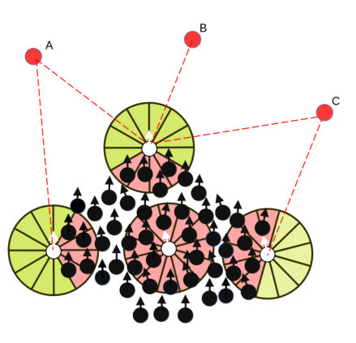
<figcaption class="paper-figure-caption"><b>Fig 1.</b> Figure 1: Local vision occlusion. Schematic of the local vision occlusion for selected particles (shown in white). Each vision cone (in two spatial dimensions) is divided into 12 segments, and if a segment contains another particle (shown in black), it is considered blocked (red shading). As a result, the threats (A, B, and C, red) are visible to only a few particles (connected via dashed-lines). The particle at the center of the flock has its entire field of view obstructed and cannot perceive any of the threats. The agents are modeled as point particles; the circles are shown for illustration only.</figcaption>
</figure>
<figure class="paper-figure-card">
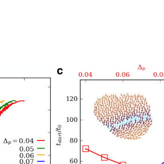
<figcaption class="paper-figure-caption"><b>Fig 2.</b> Figure 2: Information propagation in the flock. (a) Rank curves for varying damping coefficients η. For small η, the information propagates linearly (black solid line) whereas for large η = 2, a diffusive propagation develops (black dashed line). Here the curve for the linear limit is shifted by the intercept at the start-time as cst −cststart(η = 0.1), whereas the diffusive limit (black dashed line) is shifted by √</figcaption>
</figure>
<figure class="paper-figure-card">
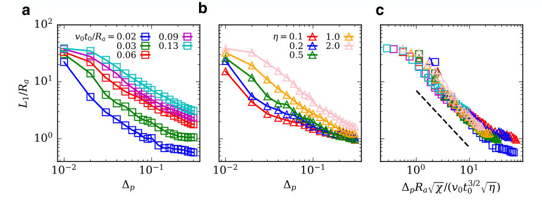
<figcaption class="paper-figure-caption"><b>Fig 3.</b> Figure 3: Turning distance of the flock after perception of a predator. The turning distance L1/Ra as a function of the predator-response strength ∆p, for (a) different flock velocities v0 (η = 0.5) and (b) different η (Here v0/cs = 0.03). (c) A universal scaling curve is obtained when data for L1 from (a) and (b) is plotted against the scaling variable ∆pRa√χ/(v0t3/2 0 √η). The dashed line indicates the decay L1/Ra ∼(v0t3/2 0 √η)/(∆pRa√χ).</figcaption>
</figure>
<figure class="paper-figure-card">
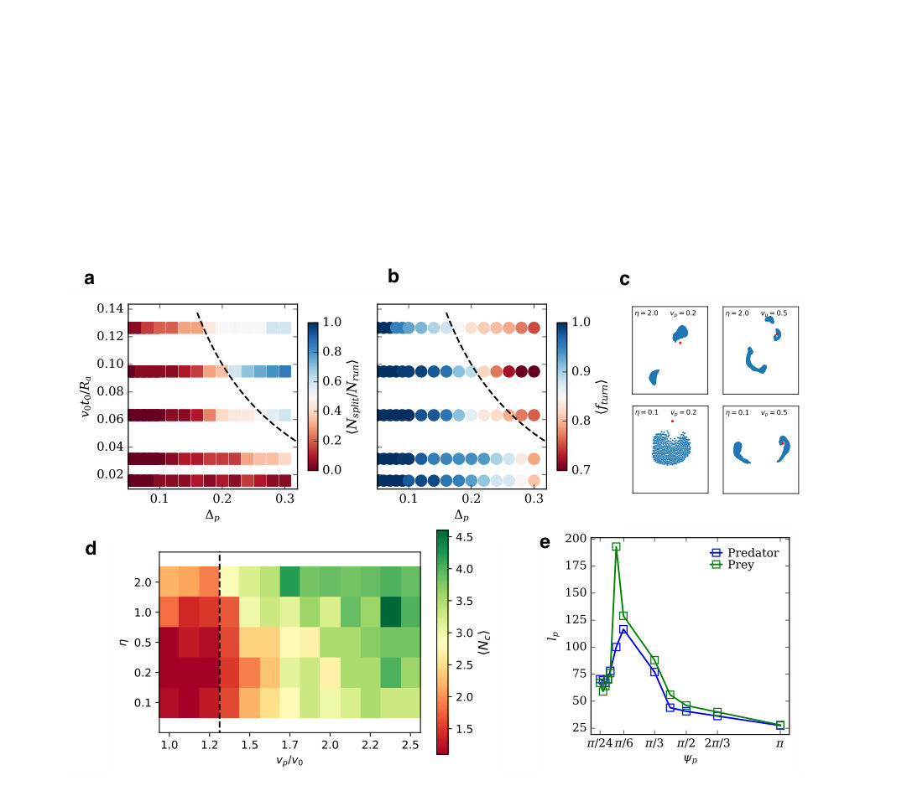
<figcaption class="paper-figure-caption"><b>Fig 4.</b> Figure 4: Flock fracturing under predator attack. (a) Probability of flock splitting (measured from the fraction of simulations Nsplit/Nrun where the flock splits) as a function of scaled flock velocity v0t0/Ra = v0/cs and predator response strength ∆p. (b) The fraction of agents fturn within each flock that initiate the turn in the same relative direction, i.e. left or right from the initial heading vector, as a function of v0 and ∆p. The data is averaged over all simulation runs (Nrun = 20). Lines indicating phase boundaries are guides to the eye. (c) Snapshots of the flock at time t = 2tL (tL = √</figcaption>
</figure>
<figure class="paper-figure-card">
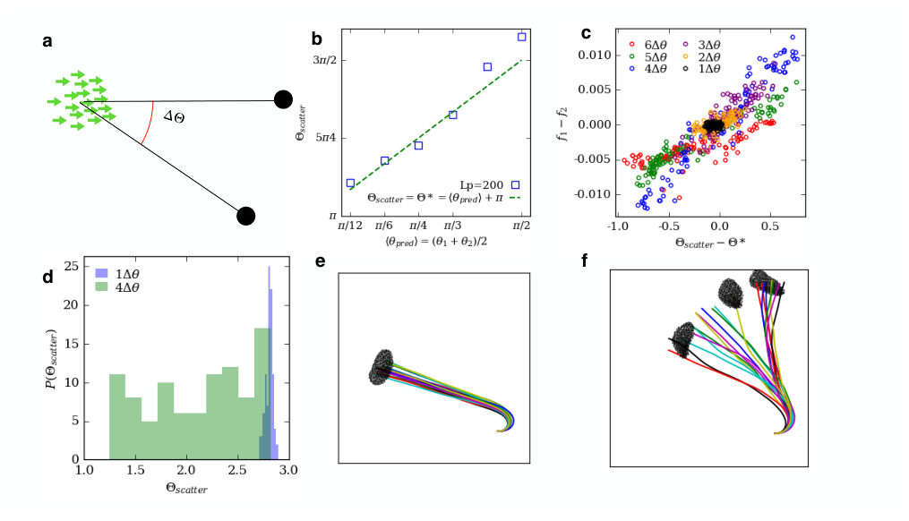
<figcaption class="paper-figure-caption"><b>Fig 5.</b> Figure 5: Variability of flock escape from two predators. (a) Schematic of the two-predator scattering simulation. (b) Exit angle Θscatter of the flock for two stationary predators at positions (radial coordinates) (Lp, θ1), (Lp, θ2), with θ1 = 0, i.e. on the x-axis. The dashed line indicates the exit angle equal to the fixed point solution for the average polarization direction Θ∗= (θ1 + θ2)/2 + π. (c) The difference f1 −f2 between the fraction of boundary particles that only detect predator ‘1’ (f1) and predator ‘2’ (f2) as a function of the deviation Θscatter −Θ∗. In all simulations Rthreat = 2Lp so that the threat is detected for the duration of the run. (d) Probability distribution of...</figcaption>
</figure>
</div>

<p><strong>Summary.</strong> This paper models collective escape in cognitive flocks using an augmented inertial spin model that includes realistic interactions like collision avoidance. It shows that information propagates efficiently, allowing the flock to maintain cohesion while evading a predator. The findings provide general principles linking information dynamics, geometry, and collective survival.</p>
<p><strong>Why it may be interesting.</strong> While focused on classical active matter, the concepts of non-equilibrium dynamics, collective synchronization, and information flow in complex systems are highly relevant to understanding quantum many-body dynamics and open quantum systems.</p>
<details>
<summary>Detailed structure</summary>
<p><strong>Main problem.</strong> The study investigates how information (specifically threat perception) propagates and shapes collective escape behavior in cognitive flocks under realistic physical constraints.</p>
<p><strong>Main result.</strong> The model demonstrates that fast information propagation can synchronize responses to maintain flock cohesion during pursuit, and the turning distance scales according to a balance between response strength, flock speed, and damping.</p>
<p><strong>Method.</strong> The research uses numerical simulations of the augmented inertial spin model, incorporating multiple interaction forces like alignment, collision avoidance, and cohesion.</p>
<p><strong>Model / system.</strong> The system models cognitive agents as active Brownian particles whose dynamics are governed by an augmented inertial spin model, including terms for alignment, local collision avoidance, and cohesion forces.</p>
<p><strong>Key observables.</strong> Information propagation speed, turning distance scaling, consensus fraction, and flock splitting probability.</p>
<p><strong>Important parameters / regimes.</strong> Response strength (Delta_p), flock speed (v_0), damping coefficient (eta), and interaction strengths (K, Omega_a, Omega_f).</p>
<p><strong>Assumptions / limitations.</strong> The model assumes point particles and restricts initial threat perception to agents with an unobstructed line of sight to the predator.</p>
<p><strong>Figures summary.</strong> Figures illustrate rank curves showing information propagation speed under varying damping coefficients, and turning distance scaling laws derived from varying response strengths and speeds.</p>
<p><strong>Paper structure.</strong> The paper builds from defining the governing equations (ISM with multiple forces) to analyzing information propagation speed, characterizing the scaling of turning distance, and finally contrasting flock vs. single-particle escape dynamics.</p>
</details>
<details>
<summary>Abstract</summary>
<p>Information sharing, threat perception, and collective evasion highlight the advantages of swarm intelligence. Here, we study the behavior of flocks of cognitive agents, based on numerical simulations of the augmented inertial spin model, with an explicit predator. Each agent on the predator-facing side of the flock perceives the threat, triggering collective turns through local interactions. We show that the augmented inertial spin model sustains nearly linear information propagation in the under-damped regime, even with realistic flocking interactions such as local collision avoidance and swarm cohesion in addition to alignment. The turning distance of the flock to a stationary predator scales with the ratio $Δ_p/(v_0\sqrtη)$, identifying an optimal balance between response strength $Δ_p$, flock speed $v_0$, and damping $η$ of information propagation. Fragmentation arises when different parts of the flock turn in different directions, however, fast information propagation can synchronize these responses and maintain flock cohesion while under pursuit. For two predators, a combination of stability analysis and simulations reveals a stark contrast between flock and single-particle reactions, with scattering angle shaped by flock geometry, predator position, and the heterogeneous responses of the detecting front. Together, these results show how information propagation, flock geometry, and dynamics together shapes collective escape, providing general principles relevant to both biological flocks and robotic swarms.</p>
</details>
<p><sub><a href="#top">↑ back to top</a></sub></p>

<p><a id="paper-2610.08143"></a></p>
<h3 id="a-new-model-for-the-income-distribution"><a href="http://arxiv.org/abs/2610.08143v1">A New Model for the Income Distribution</a></h3>
<p><strong>Authors:</strong> Ekrem Aydiner<br>
<strong>Type:</strong> theory · <strong>Category:</strong> statistical mechanics · <strong>PDF:</strong> <a href="https://arxiv.org/pdf/2610.08143v1">https://arxiv.org/pdf/2610.08143v1</a><br>
<strong>Analysis basis:</strong> full PDF text, analyzed in chunks
<strong>Topic relevance:</strong> <code>methods for driven-dissipative</code> <strong>3/5</strong> · <code>non-equilibrium universality</code> <strong>3/5</strong> · <code>Frenkel-Kontorova</code> <strong>1/5</strong> · <code>driven-dissipative phase transition</code> <strong>1/5</strong> · <code>scars &amp; prethermalization</code> <strong>1/5</strong></p>
<div class="figure-strip-hint">↔ Scroll figures horizontally</div>
<div class="paper-figures-scroll">
<figure class="paper-figure-card">
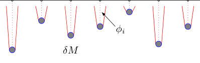
<figcaption class="paper-figure-caption"><b>Fig 1.</b> FIG. 1. Schematic representation of the one-dimensional model, where the potential wells are randomly distributed along the lattice.</figcaption>
</figure>
<figure class="paper-figure-card">
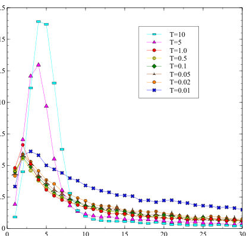
<figcaption class="paper-figure-caption"><b>Fig 2.</b> FIG. 2. Pareto exponent for different temperatures and the corre- sponding money distribution profiles as a function of x. The results show that the money distributions follow an inverse power-law be- havior, and the Pareto exponent ν(T) varies systematically with tem- perature.</figcaption>
</figure>
<figure class="paper-figure-card">
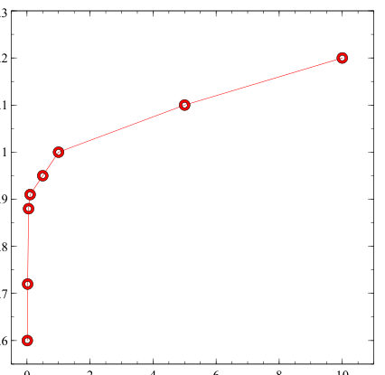
<figcaption class="paper-figure-caption"><b>Fig 3.</b> FIG. 4. Values of the Pareto exponent ν(T) obtained for different temperature values. The exponent varies approximately within the range 0.5 &lt; ν(T) &lt; 1.5, clearly showing its dependence on temper- ature.</figcaption>
</figure>
<figure class="paper-figure-card">
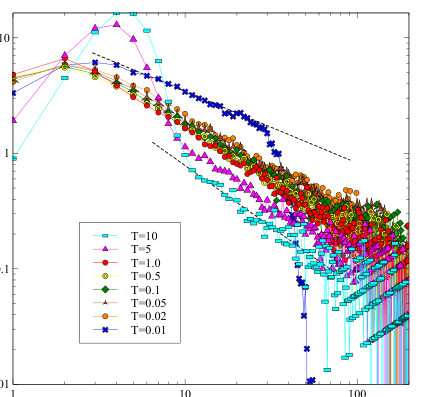
<figcaption class="paper-figure-caption"><b>Fig 4.</b> FIG. 3. The money distribution P(x) plotted on a log–log scale for different temperature values. The tail of the distribution follows an inverse power-law behavior, clearly indicating a Pareto-type scaling. The fitted slopes (dashed lines) correspond to the Pareto exponents obtained for each temperature.</figcaption>
</figure>
<figure class="paper-figure-card">
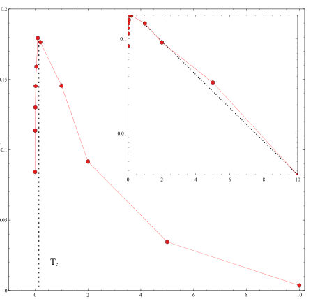
<figcaption class="paper-figure-caption"><b>Fig 5.</b> FIG. 5. Vacancy fraction f0(T) as a function of temperature T. The dashed line indicates the critical temperature Tc ≃0.05.</figcaption>
</figure>
</div>

<p><strong>Summary.</strong> This paper proposes a kinetic trap-diffusion model to simulate money exchange, treating the effective temperature ($T$) as a control parameter. By simulating the system, the authors demonstrate that $T$ dictates the resulting wealth distribution, causing the Pareto exponent to vary continuously between different regimes. This provides a unified, physically motivated framework for understanding the variation of economic inequality.</p>
<p><strong>Why it may be interesting.</strong> The use of a temperature parameter to control the transition between different statistical regimes (exponential to power-law) is a general concept applicable to non-equilibrium dynamics in complex physical systems, such as energy relaxation or particle transport in disordered media.</p>
<details>
<summary>Detailed structure</summary>
<p><strong>Main problem.</strong> The study addresses the dynamical origin and empirical variation of Pareto distributions in money-exchange systems, aiming to explain why the Pareto exponent varies across different economies.</p>
<p><strong>Main result.</strong> The proposed kinetic trap-diffusion model successfully generates a range of Pareto exponents ($
u$) as a function of an effective temperature ($T$), unifying exponential and power-law regimes.</p>
<p><strong>Method.</strong> The research employs kinetic Monte Carlo simulations to model money exchange governed by thermally activated diffusion on a disordered potential landscape.</p>
<p><strong>Model / system.</strong> The system is a one-dimensional lattice where money moves between sites with random potential wells ($\phi_i$). The dynamics follow a Metropolis rule, controlled by an effective temperature $T$, conserving total money.</p>
<p><strong>Key observables.</strong> Pareto exponent ($
u(T)$), Gini index ($G(T)$), and the fraction of zero-wealth agents ($f_0(T)$).</p>
<p><strong>Important parameters / regimes.</strong> Effective temperature ($T$), which acts as the primary control parameter regulating mobility and exchange dynamics.</p>
<p><strong>Assumptions / limitations.</strong> The total amount of money in the system is conserved, and the dynamics are governed by a temperature-dependent Metropolis acceptance rule.</p>
<p><strong>Figures summary.</strong> Figures illustrate the transition of the wealth distribution $P(x)$ from an exponential form at high $T$ to a power-law (Pareto) tail at low $T$, confirming the systematic dependence of the exponent on $T$.</p>
<p><strong>Paper structure.</strong> The paper introduces the kinetic trap-diffusion model, details the simulation methodology using Monte Carlo techniques, presents results showing the temperature-dependent exponent $
u(T)$, and discusses the implications for inequality dynamics.</p>
</details>
<details>
<summary>Abstract</summary>
<p>In this study, we propose a kinetic trap--diffusion model to describe the emergence of Pareto distributions in money-exchange systems. Using kinetic Monte Carlo simulations, we show that the Pareto exponent depends explicitly on temperature and takes values in the range $0.5 \leq ν(T) \leq 1.5$. In the present framework, the temperature $T$ acts as a control parameter that regulates the exchange dynamics through thermally activated diffusion. Unlike conventional kinetic exchange models, where the Pareto exponent is fixed by microscopic rules, the proposed model generates a range of Pareto exponents as a function of $T$. The temperature-dependent Pareto exponent constitutes the central novelty of the proposed kinetic trap--diffusion framework. This feature provides a natural explanation for the empirically observed variations in Pareto exponents across different countries and economic conditions. In addition, the fraction of zero-wealth agents and the Gini index exhibit a non-monotonic dependence on temperature, revealing distinct dynamical regimes arising from the competition between trapping and money mobility. The persistence of the Pareto-like stationary distribution under strongly nonuniform initial conditions further supports the robustness of the proposed mechanism. These results show that different Pareto-tail and inequality regimes can emerge from the same trap--diffusion dynamics through changes in a single control parameter</p>
</details>
<p><sub><a href="#top">↑ back to top</a></sub></p>

<p><a id="paper-2610.08512"></a></p>
<h3 id="dynamical-vertex-approximation-for-retarded-interactions-application-to-the-hubbard-holstein-model"><a href="http://arxiv.org/abs/2610.08512v1">Dynamical vertex approximation for retarded interactions: Application to the Hubbard-Holstein model</a></h3>
<p><strong>Authors:</strong> Emin Moghadas, Samuele Giuli, Massimo Capone, Alessandro Toschi<br>
<strong>Type:</strong> theory · <strong>Category:</strong> strongly correlated electrons · <strong>PDF:</strong> <a href="https://arxiv.org/pdf/2610.08512v1">https://arxiv.org/pdf/2610.08512v1</a><br>
<strong>Analysis basis:</strong> full PDF text, analyzed in chunks
<strong>Topic relevance:</strong> <code>Keldysh / 2PI / non-Gaussian methods</code> <strong>3/5</strong> · <code>analog quantum simulation</code> <strong>2/5</strong> · <code>methods for driven-dissipative</code> <strong>2/5</strong> · <code>correlated / nonlocal dissipation</code> <strong>1/5</strong> · <code>driven-dissipative phase transition</code> <strong>1/5</strong></p>
<div class="figure-strip-hint">↔ Scroll figures horizontally</div>
<div class="paper-figures-scroll">
<figure class="paper-figure-card">
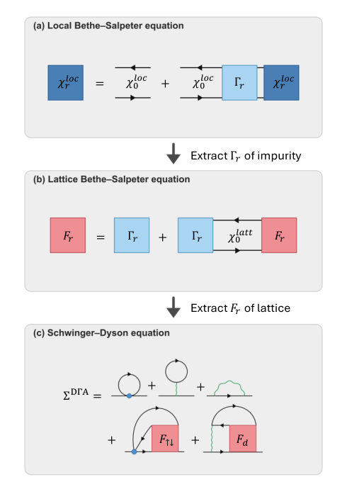
<figcaption class="paper-figure-caption"><b>Fig 1.</b> FIG. 1. Schematic illustration of the dynamical-U ladder- DΓA algorithm flow. The impurity vertex Γ, obtained by inverting a local BSE (upper panel), serves as the input for the lattice ladder equation (middle panel) for the full vertex Fq. This object inherits its momentum-dependence from the lattice bubble-diagrams that propagate the transfer momen- tum q. In the final step the non-local correction to the DMFT self-energy is computed via the SDE (lower panel) with the DMFT ladder vertices Fq as main building blocks.</figcaption>
</figure>
<figure class="paper-figure-card">
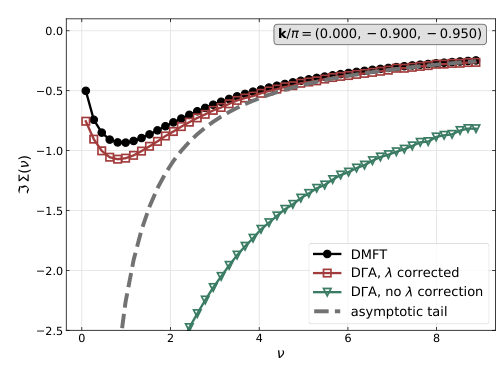
<figcaption class="paper-figure-caption"><b>Fig 2.</b> FIG. 2. Comparison of λ-corrected (red) and uncorrected DΓA (green) self-energies on the Fermi-surface with the local DMFT self-energy (black) along with the exact self-energy 1/ν tail (gray dashed line). The data are obtained for the 3D Hubbard-Holstein model at U = 3, λ = 1, ω0 = 0.1, n = 0.9 and β = 100.</figcaption>
</figure>
<figure class="paper-figure-card">
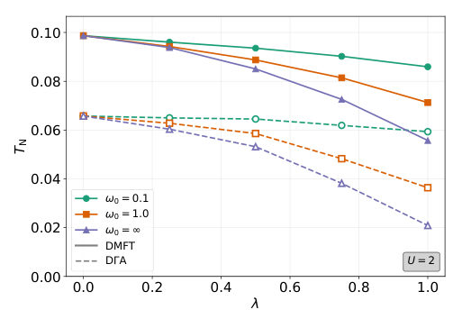
<figcaption class="paper-figure-caption"><b>Fig 3.</b> FIG. 3. DMFT and ladder-DΓA results for the N´eel temper- ature TN of the HHM on the cubic lattice as a function of λ and the three phonon frequencies ω0 = {0.1, 1, ∞}. The Hubbard interaction is fixed to U = 2.</figcaption>
</figure>
<figure class="paper-figure-card">
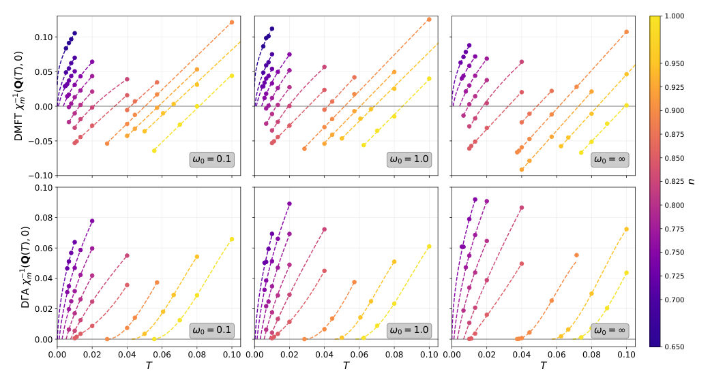
<figcaption class="paper-figure-caption"><b>Fig 4.</b> FIG. 4. Temperature dependence of the DMFT (upper row) and ladder-DΓA (lower row) spin susceptibilities at the ordering vector Q for various fillings and the three phonon frequencies ω0 = {0.1, 1, ∞}. For all calculations considered here the Hubbard interaction is set to U = 3 with the el-ph coupling being λ = 1</figcaption>
</figure>
<figure class="paper-figure-card">
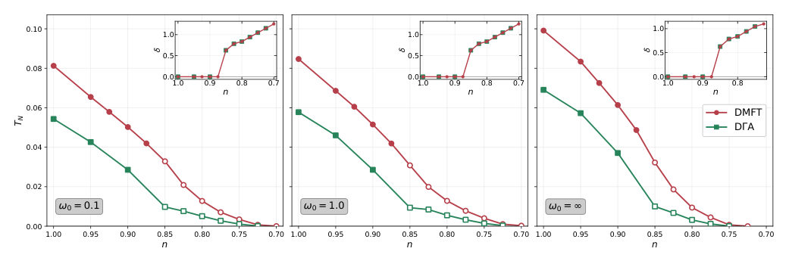
<figcaption class="paper-figure-caption"><b>Fig 5.</b> FIG. 5. Doping dependence of the DMFT (red) and ladder-DΓA (green) N´eel temperature TN for ω0 = 0.1 (left panel), ω0 = 1 (middle panel) and ω0 = ∞(right panel), with U = 3 and λ = 1. Empty markers indicate incommensurate ordering vectors for the spin response, Q = (π, π, π −δ). The incommensurability δ as a function of filling n for each case is shown in the respective insets.</figcaption>
</figure>
</div>

<p><strong>Summary.</strong> This work develops an advanced theoretical tool, the "dynamical-U DΓA," to handle electron-boson coupling in strongly correlated systems. By applying it to the Hubbard-Holstein model, the authors investigate how phonon-mediated interactions compete with electronic correlations to determine magnetic and superconducting ground states.</p>
<p><strong>Why it may be interesting.</strong> While focused on condensed matter, the treatment of retarded interactions and the systematic inclusion of bosonic coupling into a many-body self-energy framework (DΓA) shares conceptual parallels with open quantum systems where environmental coupling (bath) dynamics are crucial.</p>
<details>
<summary>Detailed structure</summary>
<p><strong>Main problem.</strong> The paper aims to extend the Dynamical Vertex Approximation (DΓA) to accurately treat strongly interacting electrons coupled to bosons, specifically addressing the frequency dependence of the interactions.</p>
<p><strong>Main result.</strong> The developed "dynamical-U DΓA" scheme successfully applies to the Hubbard-Holstein model, allowing the study of how electron-phonon coupling modifies competing electronic instabilities like antiferromagnetism and d-wave superconductivity.</p>
<p><strong>Method.</strong> The core method is the "dynamical-U DΓA," which extends the ladder-DΓA formalism by incorporating the frequency dependence of the bare interaction into the Bethe-Salpeter equation and self-energy calculations.</p>
<p><strong>Model / system.</strong> The primary model is the Hubbard-Holstein model, which describes strongly correlated electrons (Hubbard repulsion $U$) coupled to bosonic excitations (phonons, $\Omega_\alpha$). This setup allows studying the competition between electronic correlations and electron-phonon coupling.</p>
<p><strong>Key observables.</strong> Antiferromagnetic phase diagram (3D), d-wave superconducting instability (2D), magnetic fluctuations, and nonlocal electronic self-energy.</p>
<p><strong>Important parameters / regimes.</strong> Hubbard interaction strength ($U$), electron-phonon coupling strength ($g$), and the characteristic phonon frequency ($\omega_0$).</p>
<p><strong>Assumptions / limitations.</strong> The method builds upon DMFT by systematically including non-local correlations via the vertex corrections, extending previous DΓA applications that assumed instantaneous interactions.</p>
<p><strong>Figures summary.</strong> Figure 1 schematically illustrates the dynamical-U ladder-DΓA approach, showing the inclusion of frequency dependence in the vertex corrections.</p>
<p><strong>Paper structure.</strong> The paper introduces the need to extend DΓA for retarded interactions, details the "dynamical-U DΓA" formalism by incorporating frequency dependence into the BSE and SDE, and then applies this framework to analyze the Hubbard-Holstein model's phase diagram and superconducting properties.</p>
</details>
<details>
<summary>Abstract</summary>
<p>We extend the dynamical vertex approximation (D$Γ$A), in its most commonly used ladder-version, to systems with retarded electronic interactions. Such an extended scheme, which we name "dynamical-$U$ D$Γ$A", allows us to study strongly interacting electrons coupled to bosons including non-local spatial correlations on all length scales on top of the purely local ones captured by dynamical mean-field theory. We demonstrate the applicability of the method in the specific case of the coupling to a single dispersionless phononic mode, by studying the Hubbard-Holstein model on the square and cubic lattices, focusing on regimes of sizable Hubbard interactions where strong electronic correlations compete with phonon-mediated interactions. As illustrative examples, we consider the antiferromagnetic phase in the three-dimensional model and the d-wave superconductor in two dimensions, analyzing the effect of the electron-phonon coupling, including its frequency dependence, on both instabilities.</p>
</details>
<p><sub><a href="#top">↑ back to top</a></sub></p>

<p><a id="paper-2610.08723"></a></p>
<h3 id="efficient-learning-of-structured-fermionic-states-under-general-quadratic-evolution"><a href="http://arxiv.org/abs/2610.08723v1">Efficient Learning of Structured Fermionic States under General Quadratic Evolution</a></h3>
<p><strong>Authors:</strong> Erfan Amidi, Ali Asadian, Ali Hamed Moosavian<br>
<strong>Type:</strong> theory · <strong>Category:</strong> quantum information and computing · <strong>PDF:</strong> <a href="https://arxiv.org/pdf/2610.08723v1">https://arxiv.org/pdf/2610.08723v1</a><br>
<strong>Analysis basis:</strong> full PDF text, analyzed in chunks
<strong>Topic relevance:</strong> <code>analog quantum simulation</code> <strong>3/5</strong> · <code>quantum measurements</code> <strong>3/5</strong> · <code>Full counting statistics</code> <strong>1/5</strong> · <code>Keldysh / 2PI / non-Gaussian methods</code> <strong>1/5</strong> · <code>methods for driven-dissipative</code> <strong>1/5</strong></p>
<div class="figure-strip-hint">↔ Scroll figures horizontally</div>
<div class="paper-figures-scroll">
<figure class="paper-figure-card">
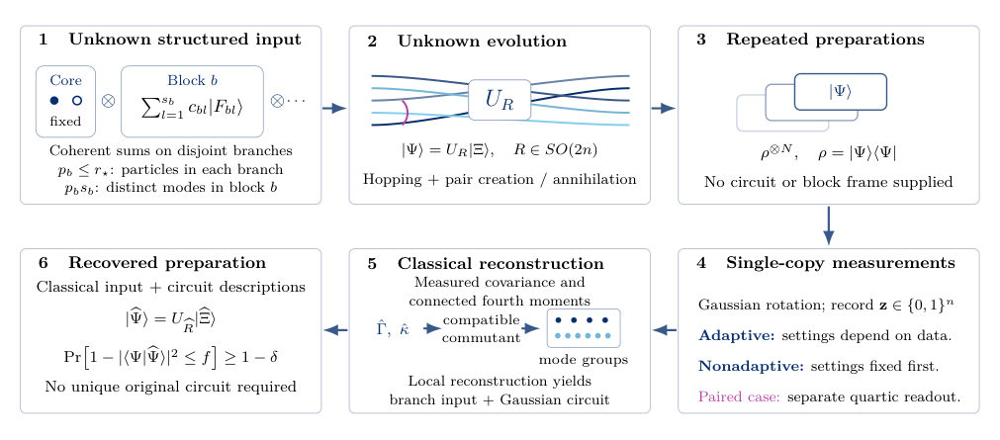
<figcaption class="paper-figure-caption"><b>Fig 1.</b> Figure 1: Setting and reconstruction routes. Fixed core occupations and disjoint input blocks form a tensor product. Each block coherently sums sb disjoint branches with pb ≤r⋆particles each and uses pbsb modes. Filled/open core dots denote occupied/vacant modes. Unknown even Gaussian evolution allows pair creation and annihilation. Independent output copies are measured individually, with settings chosen adaptively or fixed beforehand. Classical processing returns a valid branch input and Gaussian circuit preparing approximately the same state, rather than a unique original preparation. Here |Ξ⟩includes the core and z is an occupation string. Theorem 1 gives the fidelity guarantee; the...</figcaption>
</figure>
<figure class="paper-figure-card">
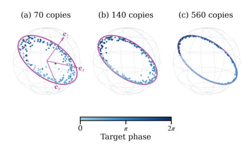
<figcaption class="paper-figure-caption"><b>Fig 2.</b> Figure 2: Quartic reconstruction of singlet-phase states. Magenta marks the target circle; blue points are inde- pendent reconstructions, colored by target phase. Panel (a) marks the orthonormal directions ex, ey, ez of the logical Pauli coordinates. The projection retains leakage; Appendix D gives its geometry, setting and full-state errors.</figcaption>
</figure>
<figure class="paper-figure-card">
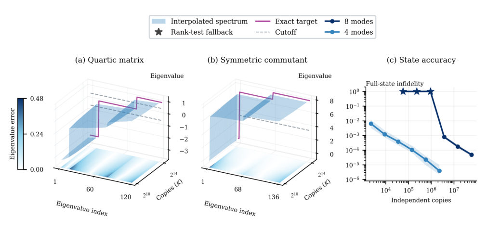
<figcaption class="paper-figure-caption"><b>Fig 3.</b> Figure 3: Measured structure and full-state reconstruction. (a,b) Transparent surfaces interpolate eight-mode quartic and commutant spectra at four measured budgets, with K copies per quartic observable. Magenta gives the exact spectra; gray dashes mark decoder cutoffs on the same back plane. Base-plane colors interpolate absolute eigenvalue errors, from white (zero) to dark blue on a shared scale. (c) Four- and eight-mode full-state infidelity: medians of 24 runs, with shaded 10–90% ranges. Stars mark budgets where every run returned a rank-test fallback; failures remain in the statistics. Larger K improves the observed accuracy overall. Interpolation adds no measurements. Appendix D gives...</figcaption>
</figure>
<figure class="paper-figure-card">

<figcaption class="paper-figure-caption"><b>Fig 4.</b> Figure 2 varies the input phase. Each dot is an indepen- dent reconstruction, expressed in a fixed logical Bloch frame; the evaluator alone undoes the quench to define these coordinates. The exact targets form the magenta great circle. Increasing the copy budget concentrates the learned points near that circle, without renormalizing away leakage from the two-branch subspace. Full-state errors are reported in Appendix D.</figcaption>
</figure>
<figure class="paper-figure-card">
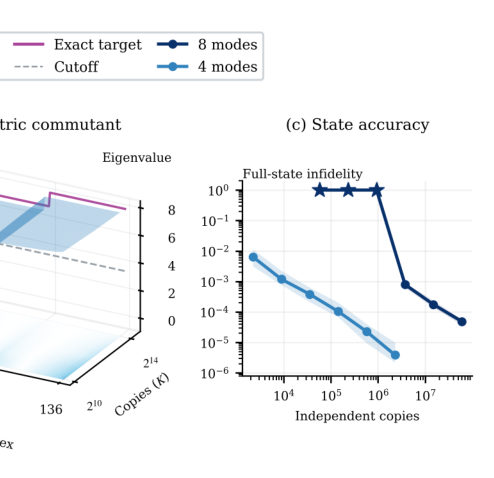
<figcaption class="paper-figure-caption"><b>Fig 5.</b> Figure 3 fixes the input phase at zero. Panels (a,b) use two dimers coupled by the quench. In panel (a), quartic measurement data are assembled into a matrix. Its separated eigenvalue groups show that the structural separation survives the sampled noise; the associated eigenspaces approximate the within-block pair subspace. Panel (b) forms a second matrix from that subspace. Its two low modes approximate the span of the hidden block projectors; diagonalizing their combinations separates the mode groups. The eigenvalues diagnose this sepa- ration, while the eigenvectors carry the reconstruction information. The surfaces interpolate the first acquisition at each measured budget K, the number...</figcaption>
</figure>
</div>

<p><strong>Summary.</strong> This paper develops theoretical protocols to reconstruct unknown pure fermionic states that evolve under general quadratic Hamiltonians. By utilizing single-copy Gaussian measurements and analyzing higher-order correlations, the authors achieve high-fidelity reconstruction guarantees. This advances the field by providing scalable, resource-bounded methods for characterizing complex quantum states in fermionic systems.</p>
<p><strong>Why it may be interesting.</strong> This work provides rigorous, resource-bounded protocols for quantum state tomography/characterization in fermionic systems, which is crucial for validating quantum simulation hardware or understanding quantum memory readout.</p>
<details>
<summary>Detailed structure</summary>
<p><strong>Main problem.</strong> The paper addresses the theoretical problem of reconstructing an unknown pure fermionic state that has undergone a general quadratic evolution, starting from structured, disjoint input blocks.</p>
<p><strong>Main result.</strong> The authors prove that the state preparation can be reconstructed with high fidelity using polynomial resources in system size and inverse infidelity, even when the evolution involves pair creation/annihilation.</p>
<p><strong>Method.</strong> The reconstruction relies on adaptive or nonadaptive single-copy Gaussian measurements, analyzing measured covariance and connected quartic correlations to identify the hidden block structure and the governing Gaussian circuit.</p>
<p><strong>Model / system.</strong> The system involves fermionic states in $n$ modes, structured as a tensor product of disjoint input blocks acted upon by a general quadratic Hamiltonian, which can be passive (number-conserving) or active.</p>
<p><strong>Key observables.</strong> Covariance ($\hat{\Gamma}$), connected fourth moments ($\hat{\kappa}$), and quartic observables ($B_I$) for the paired-magic orbit.</p>
<p><strong>Important parameters / regimes.</strong> Fidelity ($f$), failure probability ($\delta$), system size ($n$), and particle cap ($r^\star$).</p>
<p><strong>Assumptions / limitations.</strong> The state must be preparable in the specific structured form involving disjoint input blocks and a quadratic evolution. The resource bounds are derived for worst-case scenarios.</p>
<p><strong>Figures summary.</strong> Figure 1 illustrates the state structure and reconstruction routes. Figure 2 shows quartic reconstruction for paired-magic states. Figure 3 compares measured structure and full-state accuracy across different copy budgets.</p>
<p><strong>Paper structure.</strong> The paper develops general theorems for reconstruction (Theorem 1) and a specialized procedure for the paired-magic orbit (Theorem 2). It details iterative algorithms (Adaptive/Nonadaptive) using spectral analysis of measured observables to recover the preparation circuit.</p>
</details>
<details>
<summary>Abstract</summary>
<p>We prove that unknown pure fermionic states prepared from disjoint-branch fixed-particle-number blocks can be reconstructed after general quadratic evolution, including pair creation and annihilation. For a fixed particle cap per block, adaptive or nonadaptive single-copy Gaussian measurements yield classical input and circuit descriptions with prescribed fidelity and confidence, using polynomial resources in system size and inverse infidelity. The adaptive procedure has the sharper copy guarantee. Connected quartic correlations and a covariance-compatible commutant identify the hidden blocks; local states are recovered from fresh measurements or a predetermined bounded-degree moment table. Stable branch recovery gives valid preparation descriptions. Neither particle-number conservation nor block homogeneity is required; no lower bound on branch weights or covariance gaps is assumed. A certified variant returns a passive preparation whenever one exists within the promised family, without advance membership information. On the full Gaussian orbit of paired magic states, quartic measurements alone suffice, with an explicit bound converting observable error into state error.</p>
</details>
<p><sub><a href="#top">↑ back to top</a></sub></p>

<p><a id="paper-2610.07915"></a></p>
<h3 id="two-exciton-bound-states-in-the-merrifield-exciton-model"><a href="http://arxiv.org/abs/2610.07915v1">Two-exciton bound states in the Merrifield exciton model</a></h3>
<p><strong>Authors:</strong> Ning Wu, Runtian Li, Dazhi Xu<br>
<strong>Type:</strong> theory · <strong>Category:</strong> strongly correlated electrons · <strong>PDF:</strong> <a href="https://arxiv.org/pdf/2610.07915v1">https://arxiv.org/pdf/2610.07915v1</a><br>
<strong>Analysis basis:</strong> full PDF text, analyzed in chunks
<strong>Topic relevance:</strong> <code>analog quantum simulation</code> <strong>3/5</strong> · <code>Frenkel-Kontorova</code> <strong>1/5</strong> · <code>Keldysh / 2PI / non-Gaussian methods</code> <strong>1/5</strong> · <code>driven-dissipative phase transition</code> <strong>1/5</strong> · <code>methods for driven-dissipative</code> <strong>1/5</strong> · <code>non-equilibrium universality</code> <strong>1/5</strong> · <code>scars &amp; prethermalization</code> <strong>1/5</strong></p>
<div class="figure-strip-hint">↔ Scroll figures horizontally</div>
<div class="paper-figures-scroll">
<figure class="paper-figure-card">
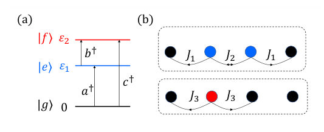
<figcaption class="paper-figure-caption"><b>Fig 1.</b> FIG. 1: (a) Level structure of an individual molecule in the Merrifield exciton model. (b) The three exciton hopping chan- nels measured by J1, J2, and J3. The black, blue, and red solid circles indicate a molecule in the ground state |g⟩, the first excited state |e⟩, and the second excited state |f⟩, re- spectively.</figcaption>
</figure>
<figure class="paper-figure-card">
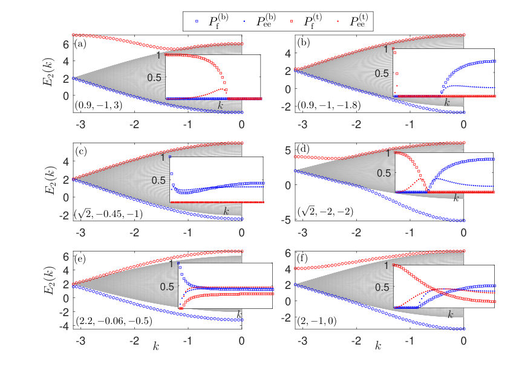
<figcaption class="paper-figure-caption"><b>Fig 2.</b> FIG. 2: Full energy spectra E2(k) in the two-exciton subspace of the Merrifield exciton model calculated through numerical diagonalization of the Bloch Hamiltonian H2(k) (12) for N = 200, ε1 = 1, and k ∈K1. The remaining three parameters (J2, J3, ˜ε) are shown in the left bottom corner of each panel. The lowest and highest two levels E(1) 2 (k) and E(N/2+1) 2 (k) are indicated by blue and red circles, respectively. The middle gray region shows the two-exciton continuum. The insets show the evolution of the weights of the two Bloch states |ξ0(k)⟩and |ξ1(k)⟩in the two states: P (b) f (k) = |V (1) 0 (k)|2 (blue box), P (b) ee (k) = |V (1) 1 (k)|2 (blue dot), P (t) f (k) = |V (N/2+1) 0 (k)|2...</figcaption>
</figure>
<figure class="paper-figure-card">
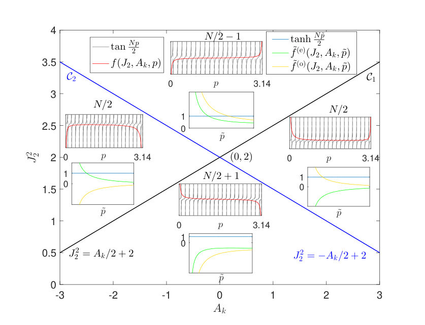
<figcaption class="paper-figure-caption"><b>Fig 3.</b> FIG. 3: The two straight lines defined by J2 2 = Ak/2 + 2 (C1, black) and J2 2 = −Ak/2 + 2 (C2, blue) divide the Ak-J2 2 plane into four regions. Equation (23) has N/2 + 1, N/2, N/2, and N/2 −1 real solutions in the four regions (see the upper insets in each region). Correspondingly, Eq. (26) has one (no) solution above (below) C1; while Eq. (27) has one (no) solution above (below) C2 (see the lower insets in each region).</figcaption>
</figure>
<figure class="paper-figure-card">
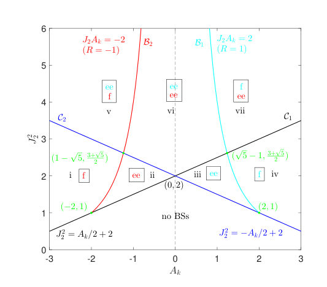
<figcaption class="paper-figure-caption"><b>Fig 4.</b> FIG. 4: The two curves B1,2 : J2Ak = ±2 with R = ±1 divide the three regions in Fig. 3 into seven subregions i-vii, in which the occurrence of the two types of two-exciton bound states are indicated (also summarized in Table I). The intersections of the curves are also shown.</figcaption>
</figure>
<figure class="paper-figure-card">
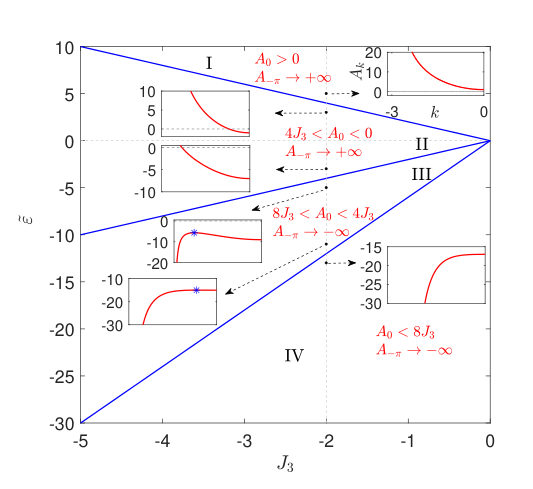
<figcaption class="paper-figure-caption"><b>Fig 5.</b> FIG. 5: The left half of the J3-˜ε plane (with J3 &lt; 0) is di- vided by the three half-lines ˜ε = −2J3, ˜ε = 2J3, and ˜ε = 6J3 into four regions. The insets in each region show the quantity Ak(J3, ˜ε, k) as a function of k on [−π, 0] for several represen- tative points with fixed J3 = −2 and varying ˜ε. The limiting behaviors of Ak as k →0+ and k →(−π)+ are also listed.</figcaption>
</figure>
</div>

<p><strong>Summary.</strong> This paper rigorously solves the two-exciton problem within the Merrifield exciton model for a 1D chain. By constructing exact Bloch states, the authors prove the existence of at most two types of bound states and analytically map the parameter regimes where these states appear. This work offers crucial benchmarks for understanding multi-exciton dynamics in organic semiconductors.</p>
<p><strong>Why it may be interesting.</strong> The rigorous analytical solution and mapping of the parameter space provide deep insights into many-body localization and correlation effects in low-dimensional quantum materials, which is highly relevant to AMO physics and open quantum systems.</p>
<details>
<summary>Detailed structure</summary>
<p><strong>Main problem.</strong> The study aims to understand the formation and dynamics of two-exciton bound states (BSs) in organic semiconductors, which is crucial for designing next-generation materials.</p>
<p><strong>Main result.</strong> The authors provide a rigorous solution proving that at most two distinct types of two-exciton bound states (f-type and ee-type) can exist in the Merrifield chain, and they map the parameter regions supporting these states.</p>
<p><strong>Method.</strong> The research involves constructing exact two-exciton Bloch states and applying a plane-wave ansatz to solve the resulting inhomogeneous tridiagonal matrices derived from the two-exciton Hamiltonian.</p>
<p><strong>Model / system.</strong> The system is modeled by the Merrifield exciton model applied to a finite-size one-dimensional molecular crystal. The Hamiltonian describes the interaction between single-site doubly-excited states and the two-particle scattering continuum.</p>
<p><strong>Key observables.</strong> Two-exciton bound state eigenenergies and wave functions, characterized by their spatial distribution (f-type vs. ee-type).</p>
<p><strong>Important parameters / regimes.</strong> Coupling strengths ($J_1, J_2, J_3$), site energies ($\varepsilon_1, \varepsilon_2$), and the total wave number ($k$) across the Brillouin zone.</p>
<p><strong>Assumptions / limitations.</strong> The analysis assumes periodic boundary conditions and utilizes a plane-wave ansatz for the solution; the model is idealized by neglecting exciton-phonon coupling.</p>
<p><strong>Figures summary.</strong> Figures illustrate the level structure of the model, the phase diagram showing BS occurrence based on coupling parameters ($J_2, J_3, 	ilde{\epsilon}$), and trajectories showing how BS properties evolve as the wave number $k$ changes.</p>
<p><strong>Paper structure.</strong> The paper establishes the physical problem, develops the mathematical framework using Bloch states and plane-wave ansatz, analyzes the phase diagram to determine existence conditions for BSs, and finally maps the evolution of these BSs across the entire Brillouin zone.</p>
</details>
<details>
<summary>Abstract</summary>
<p>Understanding the formation and dynamics of two-exciton bound states (BSs) is crucial for harnessing multi-exciton phenomena and designing next-generation organic semiconductor materials. While various mechanisms such as intermolecular exciton-exciton interactions or multi-level intramolecular configurations can generate these BSs, a fundamental understanding of their underlying lattice dynamics remains a key challenge. Within this context, the Merrifield exciton model stands out as a premier framework for capturing the intricate quantum mixing between single-site doubly-excited states and two-particle scattering continuum. In this work, by constructing a set of exact two-exciton Bloch states and applying a plane-wave ansatz to treat the resulting inhomogeneous tridiagonal matrices, we provide a complete, rigorous solution to the two-exciton problem in a finite-size Merrifield chain. We analytically map the parameter regions that support two-exciton BSs, proving that at most two distinct types of BSs can emerge, located either above or below the scattering continuum. Furthermore, we provide a quantitative interpretation of how these two types of BSs evolve as a function of the total wave number within the whole Brillouin zone. The obtained closed-form expressions for the eigenenergies and wave functions offer valuable benchmarks for exploring exciton dynamics and optical responses in related molecular aggregates.</p>
</details>
<p><sub><a href="#top">↑ back to top</a></sub></p>

<p><a id="paper-2610.07964"></a></p>
<h3 id="long-range-nonequilibrium-correlations-as-a-thermodynamic-speedometer"><a href="http://arxiv.org/abs/2610.07964v1">Long-Range Nonequilibrium Correlations as a Thermodynamic Speedometer</a></h3>
<p><strong>Authors:</strong> Vinesh Vijayan, Rishma Thilakaraj, Gokila V, Yogeshvari V A<br>
<strong>Type:</strong> theory · <strong>Category:</strong> statistical mechanics · <strong>PDF:</strong> <a href="https://arxiv.org/pdf/2610.07964v1">https://arxiv.org/pdf/2610.07964v1</a><br>
<strong>Analysis basis:</strong> full PDF text, analyzed in chunks
<strong>Topic relevance:</strong> <code>non-equilibrium universality</code> <strong>3/5</strong> · <code>Keldysh / 2PI / non-Gaussian methods</code> <strong>1/5</strong> · <code>correlated / nonlocal dissipation</code> <strong>1/5</strong> · <code>driven-dissipative phase transition</code> <strong>1/5</strong> · <code>methods for driven-dissipative</code> <strong>1/5</strong></p>
<div class="figure-strip-hint">↔ Scroll figures horizontally</div>
<div class="paper-figures-scroll">
<figure class="paper-figure-card">
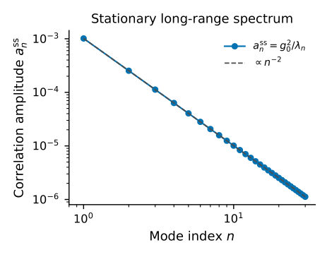
<figcaption class="paper-figure-caption"><b>Fig 1.</b> FIG. 1. This algebraic spectrum originated from the nonlocal curvature of the DLS large-deviation functional and is the static starting point for the dynamical analysis that follows.</figcaption>
</figure>
<figure class="paper-figure-card">

<figcaption class="paper-figure-caption"><b>Fig 2.</b> Fig. 1 demonstrates that, for the boundary-driven SSEP, the long-range correlation spectrum exhibits a de- cay of the mode amplitudes (blue dots) as n−2, in agree- ment with the dashed lines. The dominant correlation</figcaption>
</figure>
<figure class="paper-figure-card">

<figcaption class="paper-figure-caption"><b>Fig 3.</b> FIG. 2. Thermodynamic control of the softest correlation mode. (a) The dimensionless ratio Q1(s) remains ≤1 for all driving frequencies and approaches unity in the quasistatic limit s →0. (b) Squared lag of the n = 1 mode as a function of excess entropy production; the dashed line denotes the analytic bound. (c) At high driving frequencies, the lag of each mode saturates to its instantaneous NESS value, while only the n = 1 mode satisfies the all-frequency bound. (d) Excess dissipation continues to increase with frequency, whereas the lag saturates, causing the bound to become progressively looser.</figcaption>
</figure>
<figure class="paper-figure-card">

<figcaption class="paper-figure-caption"><b>Fig 4.</b> FIG. 3. Mode-resolved ratio Qn(ω). The horizontal dashed line marks the value 1. While Q1(ω) ≤1 for all frequen- cies, the curves for n = 2, 3, 4 rise above the bound once ω becomes comparable to the corresponding mode relaxation rates, confirming that the all-frequency inequality is special to the softest hydrodynamic mode. The peak of the n = 2 curve reaches max Q2 ≈1.42.</figcaption>
</figure>
</div>

<p><strong>Summary.</strong> This theoretical work investigates how long-range correlations develop in a driven particle system (SSEP) and connects this behavior to thermodynamic irreversibility. It proves that only the longest-wavelength mode obeys a universal, all-frequency speed limit dictated by the excess entropy production, establishing a deep link between correlation dynamics and non-equilibrium thermodynamics.</p>
<p><strong>Why it may be interesting.</strong> It provides a rigorous, quantitative connection between macroscopic thermodynamic quantities (dissipation) and microscopic correlation dynamics (long-range correlations) in driven many-body systems, which is highly relevant to non-equilibrium statistical mechanics.</p>
<details>
<summary>Detailed structure</summary>
<p><strong>Main problem.</strong> The paper aims to establish a quantitative link between the curvature of the large-deviation functional, the long-range correlations in a non-equilibrium steady state (NESS), and the finite-time thermodynamic dissipation.</p>
<p><strong>Main result.</strong> The longest-wavelength (softest) hydrodynamic mode exhibits a universal, all-frequency bound relating its relaxation lag to the excess entropy production rate, a property not shared by higher spatial modes.</p>
<p><strong>Method.</strong> The analysis involves linearizing the large-deviation functional and studying the system's response to weak, time-dependent harmonic driving, comparing the resulting correlation lag to bounds derived from excess dissipation.</p>
<p><strong>Model / system.</strong> The study uses the boundary-driven Symmetric Simple Exclusion Process (SSEP) on a finite interval, which serves as the physical model exhibiting non-equilibrium steady states.</p>
<p><strong>Key observables.</strong> Long-range correlation amplitude ($a_{ss,n}$), frequency-dependent correlation lag ($\ell_n(\omega)$), and excess entropy production rate ($\dot{\Sigma}_{	ext{ex}}$).</p>
<p><strong>Important parameters / regimes.</strong> Weak driving regime ($\epsilon \ll 1$), frequency ($\omega$), and spatial mode index ($n$).</p>
<p><strong>Assumptions / limitations.</strong> The analysis is restricted to the linear-response regime and assumes weak harmonic driving.</p>
<p><strong>Figures summary.</strong> Figure 1 shows the static correlation spectrum decaying as $n^{-2}$. Figure 2 confirms the softest mode ($n=1$) obeys a bound approaching unity in the quasistatic limit. Figure 3 compares the ratio $Q_n(\omega)$ for different modes, showing $n=1$ is unique in satisfying the bound.</p>
<p><strong>Paper structure.</strong> The paper develops the framework by relating the large-deviation functional to dissipation, analyzes the response to harmonic driving by mode decomposition, and culminates in proving the unique, all-frequency bound for the $n=1$ mode.</p>
</details>
<details>
<summary>Abstract</summary>
<p>Despite purely local microscopic dynamics, nonequilibrium steady states can develop long-range correlations. We investigate this phenomenon in the boundary-driven symmetric simple exclusion process by relating its exact nonlocal large-deviation functional to finite-time thermodynamic irreversibility under weak time-dependent driving. Decomposing the long-range correlations into hydrodynamic modes, we find that the lag associated with the slowest mode satisfies an upper bound determined by the excess entropy production rate at each driving frequency. This bound is approached in the quasistatic limit, whereas progressively shorter-wavelength modes do not generally satisfy the corresponding bound. These results provide a quantitative connection between the curvature of the large-deviation functional, long-range correlations in the nonequilibrium steady state, and finite-time dissipation. Within the linear-response regime considered here, they indicate that the longest-wavelength hydrodynamic mode has a distinct relation between slow relaxation and thermodynamic irreversibility.</p>
</details>
<p><sub><a href="#top">↑ back to top</a></sub></p>

<p><a id="paper-2610.08241"></a></p>
<h3 id="multi-time-advantage-for-certifying-quantum-coherence"><a href="http://arxiv.org/abs/2610.08241v1">Multi-time advantage for certifying quantum coherence</a></h3>
<p><strong>Authors:</strong> Karol Sajnok, Fabio Costa<br>
<strong>Type:</strong> both · <strong>Category:</strong> quantum information and computing · <strong>PDF:</strong> <a href="https://arxiv.org/pdf/2610.08241v1">https://arxiv.org/pdf/2610.08241v1</a><br>
<strong>Analysis basis:</strong> full PDF text, analyzed in chunks
<strong>Topic relevance:</strong> <code>QC/QI experiment</code> <strong>3/5</strong> · <code>correlated / nonlocal dissipation</code> <strong>1/5</strong> · <code>driven-dissipative phase transition</code> <strong>1/5</strong> · <code>methods for driven-dissipative</code> <strong>1/5</strong> · <code>quantum measurements</code> <strong>1/5</strong></p>
<div class="figure-strip-hint">↔ Scroll figures horizontally</div>
<div class="paper-figures-scroll">
<figure class="paper-figure-card">

<figcaption class="paper-figure-caption"><b>Fig 1.</b> Figure 1. Schematic illustration of multi-time coherence. A persis- tent memory correlates the system evolution across successive time intervals, so that coherence can be present in the full multi-time pro- cess even when the corresponding pairwise channels are incoherent.</figcaption>
</figure>
<figure class="paper-figure-card">

<figcaption class="paper-figure-caption"><b>Fig 2.</b> Figure 2. Relative entropy of coherence Crel(Et) of the reduced channel as a function of the dimensionless interaction time gt. The coherence vanishes whenever γ(t) = cos(4gt) cos(2gt) = 0, corre- sponding to a completely dephasing reduced channel.</figcaption>
</figure>
<figure class="paper-figure-card">

<figcaption class="paper-figure-caption"><b>Fig 3.</b> Figure 3. Relative entropy of coherence (a) for the non-Markovian multi-time process and (b) for the corresponding Markovian process as functions of τ1 and τ2. The Markovian coherence vanishes when both reduced channels are incoherent, whereas the non-Markovian process retains nonzero coherence.</figcaption>
</figure>
<figure class="paper-figure-card">

<figcaption class="paper-figure-caption"><b>Fig 4.</b> Figure 4. Ancilla-assisted measurement of the three-time process. Two Bell pairs retain the input and output Choi legs of the two con- secutive intervals, while the same environmental qubits E1, E2 in- teract with the system in both intervals. A SWAP at the intermediate time stores the first output and injects the second Choi probe. The four visible process legs are measured in the X basis by applying Hadamard gates followed by computational-basis measurements to evaluate the witness expectation value.</figcaption>
</figure>
<figure class="paper-figure-card">

<figcaption class="paper-figure-caption"><b>Fig 5.</b> Figure 5. Relative entropy of coherence of the reduced fixed-origin channel Et. The channel is completely dephasing at t = π</figcaption>
</figure>
</div>

<p><strong>Summary.</strong> This paper introduces a concept of multi-time quantum coherence, showing that the full process history can retain quantum coherence even if all individual time steps or pairwise channels are classically mixed. By using an Ising model and superconducting QPU simulations, the authors demonstrate that memory effects across intermediate times are necessary to certify this coherence, surpassing the limitations of standard Markovian descriptions.</p>
<p><strong>Why it may be interesting.</strong> This work directly tackles the limitations of standard open quantum system descriptions by introducing a rigorous measure for coherence that captures memory effects across sequential operations, which is crucial for understanding realistic quantum computation.</p>
<details>
<summary>Detailed structure</summary>
<p><strong>Main problem.</strong> The paper addresses how to certify quantum coherence in multi-time quantum processes when standard state- or channel-based tests fail to detect it.</p>
<p><strong>Main result.</strong> Multi-time access to intermediate times can reveal coherence in the full process even when all corresponding pairwise channels are individually incoherent.</p>
<p><strong>Method.</strong> The authors define process coherence using the relative entropy of coherence and compare the full process operator to its reduced, pairwise channels.</p>
<p><strong>Model / system.</strong> The study uses an Ising model as a proof of principle and demonstrates the concept on a superconducting quantum processor (QPU) using full process tomography.</p>
<p><strong>Key observables.</strong> Relative entropy of coherence ($C_{rel}$), process operators ($W$), and pairwise channel coherence.</p>
<p><strong>Important parameters / regimes.</strong> The coherence is shown to persist even when individual channels are fully dephasing, contrasting with Markovian expectations.</p>
<p><strong>Assumptions / limitations.</strong> The standard description of open-system dynamics (fixed initial to later times) is insufficient, necessitating the multi-time framework.</p>
<p><strong>Figures summary.</strong> Figures schematically illustrate multi-time coherence, showing how persistent memory correlates evolution across successive time intervals, leading to coherence in the full process even if pairwise channels are incoherent.</p>
<p><strong>Paper structure.</strong> The paper develops the concept of multi-time processes, defines process coherence, and then uses the Ising model (and superconducting QPU simulation) to demonstrate that non-Markovian, multi-time correlations preserve coherence when pairwise channels lose it.</p>
</details>
<details>
<summary>Abstract</summary>
<p>Non-classical dynamics in open quantum systems can be hidden in temporal correlations that are invisible to standard state- and channel-based tests. We define coherence for multi-time quantum processes and show that access to intermediate times can reveal coherence absent from all corresponding pairwise channels. Incoherent processes are fixed points of dephasing on all input and output spaces, and their coherence is quantified by relative entropy. As a proof of principle, we use an Ising model in which all three pairwise channels are incoherent while the full three-time process remains coherent. We observe this multi-time coherence on a superconducting quantum processor using a coherence witness and full process tomography.</p>
</details>
<p><sub><a href="#top">↑ back to top</a></sub></p>

<p><a id="paper-2610.07827"></a></p>
<h3 id="quantum-data-ruler"><a href="http://arxiv.org/abs/2610.07827v1">Quantum Data Ruler</a></h3>
<p><strong>Authors:</strong> Wangjun Lu<br>
<strong>Type:</strong> theory · <strong>Category:</strong> other · <strong>PDF:</strong> <a href="https://arxiv.org/pdf/2610.07827v1">https://arxiv.org/pdf/2610.07827v1</a><br>
<strong>Analysis basis:</strong> full PDF text, analyzed in chunks
<strong>Topic relevance:</strong> <code>quantum measurements</code> <strong>3/5</strong> · <code>analog quantum simulation</code> <strong>1/5</strong> · <code>correlated / nonlocal dissipation</code> <strong>1/5</strong> · <code>driven-dissipative phase transition</code> <strong>1/5</strong> · <code>methods for driven-dissipative</code> <strong>1/5</strong></p>
<div class="figure-strip-hint">↔ Scroll figures horizontally</div>
<div class="paper-figures-scroll">
<figure class="paper-figure-card">

<figcaption class="paper-figure-caption"><b>Fig 1.</b> FIG. 1. Quantum data ruler. An unknown state ˆρ0 and a known reference ˆρr evolve under the same ˆH; the ratio of the measured changes ∆⟨ˆA⟩(t) equals the ratio of the initial matrix elements, so the unknown is read off against the known scale.</figcaption>
</figure>
<figure class="paper-figure-card">

<figcaption class="paper-figure-caption"><b>Fig 2.</b> FIG. 2. Ergotropy from the ruler (circles), direct tomography at t = 0 (squares), and single-state inversion with level error δω = 0.05 (triangles), vs. (a) the common-mode dephasing strength 1−q (q is the retained coherence) and (b) the evolu- tion dephasing γ. Dashed: exact W; dotted: W( ˆDˆρ0). Three levels, ˆH = diag(0, 1.37, 3.04).</figcaption>
</figure>
</div>

<p><strong>Summary.</strong> The paper introduces the Quantum Data Ruler, a novel measurement technique that determines unknown quantum state parameters by taking a ratio of signal changes between the unknown state and a known reference state. This ratio measurement is shown to be exact regardless of the system's Hamiltonian or evolution time, and crucially, it remains unbiased even when the system suffers from dephasing or amplitude damping. It offers a robust alternative to standard quantum tomography for characterizing coherence.</p>
<p><strong>Why it may be interesting.</strong> This work provides a powerful, general measurement tool for quantum states that is highly resilient to common sources of decoherence (dephasing, amplitude damping), making it theoretically significant for characterizing quantum memories or quantum computation components.</p>
<details>
<summary>Detailed structure</summary>
<p><strong>Main problem.</strong> To develop a robust measurement technique, the 'Quantum Data Ruler,' capable of accurately characterizing unknown quantum states by comparing their evolution ratio against a known reference, thereby overcoming limitations imposed by noise and standard tomography.</p>
<p><strong>Main result.</strong> The ratio measurement is exact for arbitrary time and Hamiltonian, is unbiased under specific noise models (dephasing/amplitude damping), and successfully recovers coherence lost in standard two-point measurements.</p>
<p><strong>Method.</strong> The core method involves calculating the ratio of changes in expectation values ($\Delta\langle\hat{A}
angle$) for the unknown state ($\hat{
ho}_0$) versus the reference state ($\hat{
ho}_r$) over time $t$. This ratio cancels time-dependent Hamiltonian evolution factors.</p>
<p><strong>Model / system.</strong> The analysis considers general quantum systems evolving under an arbitrary Hamiltonian $\hat{H}$ and subjected to dissipation modeled by a Lindbladian. The system is analyzed using energy eigenbases $\{|E_n
angle\}$ and involves concepts like ergotropy and coherence.</p>
<p><strong>Key observables.</strong> Matrix elements of the density matrix ($
ho_{nm}$), Coherent Ergotropy ($\hat{W}$), Eigen-operator residual, and the ratio of expectation value changes.</p>
<p><strong>Important parameters / regimes.</strong> Time $t$, Hamiltonian $\hat{H}$, Dephasing strength ($1-q$), and the structure of the Lindblad jump operators ($\hat{L}_\alpha$).</p>
<p><strong>Assumptions / limitations.</strong> The method assumes the ratio structure holds, which requires the observable to be an eigen-operator under the Lindbladian evolution. The analysis also considers specific noise models (e.g., amplitude damping being immune).</p>
<p><strong>Figures summary.</strong> Figure 2 compares Ergotropy measurements using the ruler versus direct tomography and single-state inversion under varying dephasing strengths, showing the ruler's superior robustness. Other figures detail eigen-operator residuals and population dynamics in dark sectors.</p>
<p><strong>Paper structure.</strong> The paper first introduces the Quantum Data Ruler identity, proving its time and Hamiltonian independence. It then analyzes its robustness against noise (Theorem 3) and compares it to standard methods like Two-Point Measurement. Finally, it delves into the necessary and sufficient conditions for the method's validity under dissipation, requiring specific structural properties of the Lindblad jump operators.</p>
</details>
<details>
<summary>Abstract</summary>
<p>A ruler reads an unknown length against a calibrated scale. The quantum data ruler reads a matrix element of an unknown state against the signal of a known reference, from their ratio. It is exact for any Hamiltonian and any time, since transition operators change by a state-dependent constant times one function of time, removing the vanishing-signal limit. The readout is unbiased under dephasing and amplitude damping, and recovers the coherent ergotropy of a quantum battery that two-point measurement erases. The structure survives the classical limit as action--angle Fourier modes.</p>
</details>
<p><sub><a href="#top">↑ back to top</a></sub></p>

<p><a id="paper-2610.07806"></a></p>
<h3 id="quantum-telescopy-with-realistic-anti-correlated-optical-fields-as-references"><a href="http://arxiv.org/abs/2610.07806v1">Quantum telescopy with realistic anti-correlated optical fields as references</a></h3>
<p><strong>Authors:</strong> Xuan Tang, Z. Y. Ou<br>
<strong>Type:</strong> theory · <strong>Category:</strong> other · <strong>PDF:</strong> <a href="https://arxiv.org/pdf/2610.07806v1">https://arxiv.org/pdf/2610.07806v1</a><br>
<strong>Analysis basis:</strong> full PDF text, analyzed in chunks
<strong>Topic relevance:</strong> <code>interference shaping light</code> <strong>3/5</strong> · <code>quantum measurements</code> <strong>3/5</strong></p>
<div class="figure-strip-hint">↔ Scroll figures horizontally</div>
<div class="paper-figures-scroll">
<figure class="paper-figure-card">

<figcaption class="paper-figure-caption"><b>Fig 1.</b> FIG. 1. (a) Traditional HBT intensity interferometer; (b) Phase sensitive HBT scheme with coherent reference fields. Red inset: Creation of coherence between reference fields by beam splitter and use of a spatially entangled single-photon state as the reference fields as proposed by Grottesman et al [6].</figcaption>
</figure>
<figure class="paper-figure-card">

<figcaption class="paper-figure-caption"><b>Fig 2.</b> FIG. 2. Visibility of phase-dependent HBT effect as a function of |α|2/I for reference sources with gref 2 = 0 (red), 0.1 (blue), 0.5 (sky blue), 1.0 (black).</figcaption>
</figure>
<figure class="paper-figure-card">

<figcaption class="paper-figure-caption"><b>Fig 3.</b> FIG. 3. Normalized intensity correlation function gRF l 2 of resonance fluorescence verses ¯τ ≡βτ for Ω/β =10, 2, 1, 0.5.</figcaption>
</figure>
<figure class="paper-figure-card">

<figcaption class="paper-figure-caption"><b>Fig 4.</b> FIG. 4. (a) The optimized SNR ratio and (b) β(op) R versus the photon number NR of the incoming field. Circles are from numerical simulation. The red line in (a) is from Eq.(12) for the scheme with resonance fluorescence and the blue line in (a) is from Eq.(9) for the coherent state scheme. The dashed red line in (b) is from Eq.(12) for β(op) R .</figcaption>
</figure>
<figure class="paper-figure-card">

<figcaption class="paper-figure-caption"><b>Fig 5.</b> FIG. 5. Enhancement ratio as a function of input photon number NR in log scale. The solid line is from Eq.(13).</figcaption>
</figure>
</div>

<p><strong>Summary.</strong> This paper analyzes quantum telescopy, a technique for enhancing astronomical resolution using entangled photons. It compares the achievable Signal-to-Noise Ratio (SNR) when using realistic anti-bunched sources versus idealized or coherent state references. The key finding is that even with imperfections, the anti-bunched source method maintains a significant advantage over coherent state references in the weak light regime.</p>
<p><strong>Why it may be interesting.</strong> It provides a detailed theoretical framework for optimizing quantum measurements in quantum optics, specifically addressing the practical limitations of using non-ideal quantum sources for high-precision sensing.</p>
<details>
<summary>Detailed structure</summary>
<p><strong>Main problem.</strong> The paper aims to improve the angular resolution in optical astronomy beyond the diffraction limit by utilizing quantum telescopy techniques.</p>
<p><strong>Main result.</strong> The Signal-to-Noise Ratio (SNR) using a realistic anti-bunched source can still outperform the coherent state scheme in the weak incoming field limit, guiding future experimental optimization.</p>
<p><strong>Method.</strong> The analysis involves deriving and optimizing the SNR for quantum interferometry by considering realistic imperfections like finite bandwidth and detector efficiency.</p>
<p><strong>Model / system.</strong> The system models quantum telescopy using spatially entangled single-photon states generated from practical anti-bunched sources (like resonance fluorescence) as references for stellar interferometry.</p>
<p><strong>Key observables.</strong> Signal-to-Noise Ratio (SNR), Visibility (V), and Coincidence count rate (Rc).</p>
<p><strong>Important parameters / regimes.</strong> Weak incoming field limit ($N_R \ll 1$), detector efficiency ($\eta$), and source correlation parameters ($eta, \Omega$).</p>
<p><strong>Assumptions / limitations.</strong> Assumes incoming fields and reference fields are uncorrelated, and makes approximations regarding the asymptotic behavior of correlation functions for weak fields.</p>
<p><strong>Figures summary.</strong> Figures illustrate the comparison between traditional HBT, phase-sensitive HBT with coherent references, and the use of entangled single-photon states as references.</p>
<p><strong>Paper structure.</strong> The paper progresses by detailing the phase-dependent HBT effect, incorporating practical constraints, analyzing anti-bunched sources from resonance fluorescence, deriving the SNR formula, and finally optimizing parameters.</p>
</details>
<details>
<summary>Abstract</summary>
<p>Quantum telescopy, proposed by Grottesman et al., uses spatially entangled single-photon states to modify HBT stellar interferometry, potentially surpassing Michelson interferometry in resolution without baseline limits. However, finite source bandwidth, non-unit efficiency, detector response times, and celestial light bandwidth all affect its effectiveness. In this work, we consider a spatially entangled singe-photon state generated by beam-splitting a practical anti-bunched photon source from resonance fluorescence, which is a common method of generating single-photon states, and evaluate the signal level in quantum telescopy with inclusion of imperfection of detection system and finite bandwidth of celestial light. Here, given the incoming light, we optimize the parameters of the anti-bunched photon source and the detector system for the best signal-to-noise ratio (SNR), which can match that of the Michelson method in the ideal case but is always smaller in the realistic case. Alternatively, weak coherent states from heavily attenuated lasers can replace the entangled single-photon state but suffer low signal level, similar to HBT method. We find that the SNR with a realistic anti-bunched source for producing the reference fields can still beat the SNR of the coherent state scheme in the weak incoming field limit. The optimized parameters for the anti-bunched source and detection system will be a guide for future experimental endeavor.</p>
</details>
<p><sub><a href="#top">↑ back to top</a></sub></p>

<p><a id="paper-2610.08557"></a></p>
<h3 id="quasiparticle-resolved-variational-theory-of-andreev-spin-qubits"><a href="http://arxiv.org/abs/2610.08557v1">Quasiparticle-resolved variational theory of Andreev spin qubits</a></h3>
<p><strong>Authors:</strong> Teodor Iličin, Rok Žitko<br>
<strong>Type:</strong> theory · <strong>Category:</strong> strongly correlated electrons · <strong>PDF:</strong> <a href="https://arxiv.org/pdf/2610.08557v1">https://arxiv.org/pdf/2610.08557v1</a><br>
<strong>Analysis basis:</strong> full PDF text, analyzed in chunks
<strong>Topic relevance:</strong> <code>Keldysh / 2PI / non-Gaussian methods</code> <strong>3/5</strong> · <code>methods for driven-dissipative</code> <strong>3/5</strong></p>
<div class="figure-strip-hint">↔ Scroll figures horizontally</div>
<div class="paper-figures-scroll">
<figure class="paper-figure-card">

<figcaption class="paper-figure-caption"><b>Fig 1.</b> FIG. 1. Microscopic two-path model and QP-sector couplings of an Andreev spin qubit. (a) A single interacting quantum-dot orbital (QD), with Coulomb repulsion U and detuning δ, couples to two superconducting leads with gap ∆via spin-independent amplitudes VL, VR. The curved path represents effective tunneling through inactive orbitals, with spin-dependent amplitude Wσ. The factor eiχσz/2 denotes its spin-dependent phase. Arrows in (a) specify the coefficients of c† lkσdσ and c† LkσcRk′σ, whereas the conjugate pairs are implicit. (b) Bath-QP sectors relative to the isolated BCS leads. Dot–lead hopping Hc connects adjacent sectors (blue solid links), while HT scatters within sectors or...</figcaption>
</figure>
<figure class="paper-figure-card">

<figcaption class="paper-figure-caption"><b>Fig 2.</b> FIG. 2. Energy benchmarks. (a)–(c) Doublet energy ϵ ver- sus hybridization Γ at ϕ = 0 for U/∆= 0, 2, 4, respectively. Solid: variational solutions at different approximation levels; dashed: NRG; dotted: linear expansion ϵ(Γ). (d)–(f) Discrep- ancies δϵ(i) = ϵ(i) −ϵ(NRG) of the three approximation levels and the linear expansion relative to NRG at the correspond- ing U.</figcaption>
</figure>
<figure class="paper-figure-card">

<figcaption class="paper-figure-caption"><b>Fig 3.</b> FIG. 3. Accuracy of the level-3 approximation within the two-quasiparticle variational space at ϕ = 0, D/∆= 100, and W = 0. (a) Relative total-energy error 100[ϵ(3) −ϵ2QP]/|ϵ2QP| of the scalar kernel closure. (b) Relative error 100[ϵ(3) R − ϵ2QP]/|ϵ2QP| of the Rayleigh quotient evaluated with the nor- malized level-3 wavefunction constructed at ϵ(3). Here ϵ2QP is the lowest energy of the full projected 2-QP Hamiltonian. Both errors are expressed in percentages, with a linear verti- cal scale in (a) and a logarithmic vertical scale in (b).</figcaption>
</figure>
<figure class="paper-figure-card">

<figcaption class="paper-figure-caption"><b>Fig 4.</b> FIG. 4. Wavefunction benchmarks at ϕ = 0. (a)–(c) Empty- dot probability P0 versus Γ for U/∆= 0, 2, 4, respectively: NRG results and estimates from the normalized variational wavefunctions at approximation levels 1–3. (d)–(f) Weight outside the 0-QP sector, 1 −|a|2, and individual 1-QP and 2- QP component weights, calculated from the normalized level- 3 wavefunction.</figcaption>
</figure>
<figure class="paper-figure-card">

<figcaption class="paper-figure-caption"><b>Fig 5.</b> FIG. 6. Shifted and rescaled doublet energy ϵ versus su- perconducting phase difference ϕ at U = 2∆for (a)–(c) Γ/∆= 0.1, 0.4, 1. Solid: level-2 and level-3 approximations; dash-dotted: the leading low-Γ result of Eqs. (51)–(53), eval- uated with the finite-band coefficient JD(U/∆) defined in Eq. (S20); dashed: NRG. Each curve is shifted by its phase average ¯ϵ = (2π)−1 R 2π 0 ϵ(ϕ) dϕ, evaluated by trapezoidal in- tegration with periodic closure on the supplied grids for the numerical curves, and rescaled by Γ2/∆(δϵ = ϵ(ϕ) −¯ϵ).</figcaption>
</figure>
</div>

<p><strong>Summary.</strong> This work presents a quasiparticle-resolved variational theory for Andreev spin qubits, treating the system as a quantum dot coupled to superconducting leads. By retaining up to two Bogoliubov quasiparticles, the authors derive analytical expressions for Josephson couplings, demonstrating the crucial role of virtual excitations in determining qubit behavior. This connects complex strongly correlated physics to practical circuit modeling.</p>
<p><strong>Why it may be interesting.</strong> It provides a highly detailed, analytically tractable framework for understanding superconducting quantum circuits by explicitly resolving the role of virtual quasiparticle excitations in determining macroscopic couplings.</p>
<details>
<summary>Detailed structure</summary>
<p><strong>Main problem.</strong> The paper develops a quasiparticle-resolved variational theory to accurately model the energy splittings and Josephson couplings in Andreev spin qubits (ASQs).</p>
<p><strong>Main result.</strong> The theory shows that two-quasiparticle configurations significantly contribute to the spin-dependent Josephson coupling, and it provides closed-form expressions connecting correlated dot models to effective circuit Hamiltonians.</p>
<p><strong>Method.</strong> A continuum variational approach is employed, retaining configurations up to two Bogoliubov quasiparticles, and results are benchmarked against NRG/DMRG calculations.</p>
<p><strong>Model / system.</strong> The system is an Andreev spin qubit realized in a quantum-dot Josephson junction, modeled by coupling an Anderson Impurity Model (AIM) to superconducting leads described by the BCS Hamiltonian.</p>
<p><strong>Key observables.</strong> Josephson energies ($E_J, E_S$), quasiparticle composition, and site-resolved density matrices ($\varrho_s$).</p>
<p><strong>Important parameters / regimes.</strong> Coulomb interaction ($U$), superconducting gap ($\Delta$), detuning ($\delta$), and superconducting phase difference ($\phi$).</p>
<p><strong>Assumptions / limitations.</strong> The theory focuses on the odd-parity sector and utilizes variational approximations by truncating the QP configuration space to two quasiparticles.</p>
<p><strong>Figures summary.</strong> Figures illustrate the microscopic model, the QP-sector hierarchy, and show convergence checks for observables like empty-dot probability and linear spin response against DMRG/NRG results.</p>
<p><strong>Paper structure.</strong> The paper moves from defining the microscopic Hamiltonian (AIM coupled to BCS leads) to developing the variational ansatz, solving the resulting coupled integral equations in the continuum limit, and finally calculating specific observables like energy splittings and density matrices.</p>
</details>
<details>
<summary>Abstract</summary>
<p>An Andreev spin qubit stores a single unpaired spin, yet its coupling to the superconducting phase can be dominated by coherent virtual quasiparticle pairs. We develop a continuum variational description of the odd-parity doublet in a quantum-dot Josephson junction with Coulomb interaction and spin-dependent background tunneling. Retaining configurations with up to two Bogoliubov quasiparticles provides compact analytical expressions for energies and wavefunctions. We benchmark the results against numerical renormalization group calculations and identify sources of error. We obtain closed-form expressions for the conventional and spin-dependent Josephson couplings. Despite their small probability, two-quasiparticle configurations, through coherence with the zero-quasiparticle component, supply exactly half of the leading spin-dependent Josephson coupling even without Coulomb repulsion and dominate it as the repulsion grows. Spin-orbit-induced spin transfer between the dot and the leads produces a Josephson-current contribution that is common to both qubit states and finite at zero phase bias when the dot and lead Zeeman energies differ. We also map the localization of the virtual quasiparticles and the spin density in the leads. The results connect strongly correlated quantum-dot models to effective Hamiltonians used for Andreev-spin-qubit circuits and clarify how the wavefunction structure determines their couplings.</p>
</details>
<p><sub><a href="#top">↑ back to top</a></sub></p>

<p><a id="paper-2610.08445"></a></p>
<h3 id="quantifying-the-fidelity-of-a-quantum-memory"><a href="http://arxiv.org/abs/2610.08445v1">Quantifying the fidelity of a quantum memory</a></h3>
<p><strong>Authors:</strong> Victor Barizien, Sophie Egelhaaf, Angelo Gelmini Rodriguez, Louis Nicolas, Théo Sanchez Mejia, Mikael Afzelius, Pavel Sekatski, Nicolas Brunner<br>
<strong>Type:</strong> both · <strong>Category:</strong> quantum information and computing · <strong>PDF:</strong> <a href="https://arxiv.org/pdf/2610.08445v1">https://arxiv.org/pdf/2610.08445v1</a><br>
<strong>Analysis basis:</strong> full PDF text, analyzed in chunks
<strong>Topic relevance:</strong> <code>QC/QI experiment</code> <strong>3/5</strong> · <code>quantum measurements</code> <strong>2/5</strong></p>
<div class="figure-strip-hint">↔ Scroll figures horizontally</div>
<div class="paper-figures-scroll">
<figure class="paper-figure-card">

<figcaption class="paper-figure-caption"><b>Fig 1.</b> FIG. 1. Estimating the average channel fidelity Favg of a qubit memory in a prepare-and-measure setup. The general idea is presented in (a): a set of qubit states is prepared, stored in a quantum memory, and then measured via a set of projective measurements. This is illustrated with the representation of a 6 states (b), 4 states (c) and 2 states (d) strategies that can be used to characterize the fidelity of the memory via the quantity Favg. For each case, the coloured dots on the left hand side are the states (on the Bloch sphere) that need to be prepared, and the coloured arrows on the right hand side are the directions to measure on after the memory. When preparing a state of a given...</figcaption>
</figure>
<figure class="paper-figure-card">

<figcaption class="paper-figure-caption"><b>Fig 2.</b> FIG. 2. The average channel fidelity can also be estimated in an entanglement-based setup. A source prepares a max- imally entanglement state Φ+ = Φ+ Φ+ with Φ+ = (|00⟩+ |11⟩)/ √</figcaption>
</figure>
<figure class="paper-figure-card">

<figcaption class="paper-figure-caption"><b>Fig 3.</b> FIG. 3. Lower bound on the average channel fidelity Favg(M, id) of a qubit memory M as a function of the witness value T{Ψx} using 2, 4 and 6 states (respectively in green, or- ange and blue). For the 6-state witness, the quantity T{Ψx} corresponds to Favg. The 4- and 2-state protocols provide lower bounds on Favg, which are computed via an SDP opti- miasation, as described in Appendix B. Certifying a fidelity Favg &gt; 2/3 ensures that the channel is not entanglement- breaking, while Favg &gt; 1/2 guarantees the channel is not correlation-breaking.</figcaption>
</figure>
<figure class="paper-figure-card">

<figcaption class="paper-figure-caption"><b>Fig 4.</b> FIG. 4. A lower bound on the single-letter quantum channel capacity Q(1)(M) normalized by the ideal value log(d), as a function of the Choi-Jamio lkowski fidelity of the channel FCJ(M, id), in dimension d = 2, 3, 4, 5 (from bottom to top). The numerical values give the threshold fidelity below which no positive quantum capacity is guaranteed.</figcaption>
</figure>
<figure class="paper-figure-card">

<figcaption class="paper-figure-caption"><b>Fig 5.</b> FIG. 5. Semi-device-independent scenario for certifying the quantum memory. The preparation device is assumed to be trusted, i.e. upon receiving the classical input x, the de- vice produces the state Ψx which is then stored in the quan- tum memory M. The output state of the memory is then measured through a device which is a priori uncharacterized, where y denotes the measurement choice and b its outcome. From the observed statistics, p(b|ψx, y), one can lower bound the average channel fidelity of the quantum memory.</figcaption>
</figure>
</div>

<p><strong>Summary.</strong> This work establishes a comprehensive framework to certify the performance of quantum memories by quantifying their average channel fidelity. The authors utilize methods based on 2-designs and entanglement testing, which allow for precise estimation from limited experimental measurements. The framework is successfully applied to solid-state quantum memory, achieving a high fidelity certification of 98.6%.</p>
<p><strong>Why it may be interesting.</strong> The rigorous quantification of memory fidelity using established quantum information tools (like 2-designs and Choi fidelity) provides a direct, measurable benchmark for quantum hardware development.</p>
<details>
<summary>Detailed structure</summary>
<p><strong>Main problem.</strong> The paper develops a general, operational, and efficient framework for certifying the performance and quantifying the fidelity of quantum memories.</p>
<p><strong>Main result.</strong> The authors successfully certified an average channel fidelity of 98.6% for a solid-state quantum memory experiment, demonstrating the framework's practical utility.</p>
<p><strong>Method.</strong> They quantify fidelity using the average channel fidelity, estimated via a 2-design formed by a finite set of probe states, and also using entanglement-based and semi-device-independent techniques.</p>
<p><strong>Model / system.</strong> The system modeled is a quantum memory, treated mathematically as a quantum channel $M$ mapping input states to output states. The ideal memory is the identity channel.</p>
<p><strong>Key observables.</strong> Average channel fidelity ($F_{	ext{avg}}$), Choi fidelity ($F_{	ext{CJ}}$), and average efficiency ($\eta(M)$).</p>
<p><strong>Important parameters / regimes.</strong> Storage time (e.g., $10 \mu	ext{s}$ or $125 \mu	ext{s}$), dimensionality ($d$), and the number of probe states used in the 2-design.</p>
<p><strong>Assumptions / limitations.</strong> The primary approximation is replacing the integral over all pure states (Haar measure) with an estimate derived from a finite set of probe states forming a 2-design.</p>
<p><strong>Figures summary.</strong> Figure 1 illustrates estimating $F_{	ext{avg}}$ for a qubit memory using prepare-and-measure setups with varying numbers of probe states (2, 4, or 6).</p>
<p><strong>Paper structure.</strong> The paper introduces the framework, details the 2-design estimation for prepare-and-measure scenarios, discusses entanglement-based and semi-device-independent testing, and concludes with applications to solid-state memory experiments.</p>
</details>
<details>
<summary>Abstract</summary>
<p>Quantum memories are key ingredients for future quantum networks. Developing methods for their certification is therefore an important, yet challenging, problem. In this work, we present a general framework for certifying quantum memories and quantifying their performance in an operational and efficient manner, taking advantage of developments in the theory of quantum channels. We start by giving a pedagogical introduction to these concepts and tools and illustrate their natural application to quantum memories. Specifically, we quantify the fidelity of a quantum memory via the notion of average channel fidelity, which can be estimated precisely in an experiment via a finite set of probe states forming a so-called $2$-design. We then present a number of witnessing techniques for certifying this quantity, and show that it gives access to other important properties of the channel, such as its dimensionality and its capacity to transmit quantum information. We consider mostly a simple prepare-and-measure scenario, but discuss also the case of an entanglement-based setup, as well as a semi-device-independent approach. Finally, we apply these methods to a solid-state quantum memory experiment, certifying an average channel fidelity of 98.6%. Our certification methods can be readily applied to other quantum devices, such as fibers, transducers and gates.</p>
</details>
<p><sub><a href="#top">↑ back to top</a></sub></p>

<p><a id="paper-2610.07146"></a></p>
<h3 id="heavy-fermion-hybridization-waves-from-dirac-spinons-near-a-kondo-breakdown-quantum-phase-transition"><a href="http://arxiv.org/abs/2610.07146v1">Heavy-fermion hybridization waves from Dirac spinons near a Kondo-breakdown quantum phase transition</a></h3>
<p><strong>Authors:</strong> Pedro M. Cônsoli, Matthias Vojta, Onur Erten<br>
<strong>Type:</strong> theory · <strong>Category:</strong> strongly correlated electrons · <strong>PDF:</strong> <a href="https://arxiv.org/pdf/2610.07146v1">https://arxiv.org/pdf/2610.07146v1</a><br>
<strong>Analysis basis:</strong> full PDF text, analyzed in chunks
<strong>Topic relevance:</strong> <code>Keldysh / 2PI / non-Gaussian methods</code> <strong>3/5</strong> · <code>analog quantum simulation</code> <strong>1/5</strong></p>
<div class="figure-strip-hint">↔ Scroll figures horizontally</div>
<div class="paper-figures-scroll">
<figure class="paper-figure-card">

<figcaption class="paper-figure-caption"><b>Fig 1.</b> Figure 1. (a) Kondo hybridization wave (HW) with a two- sublattice unit cell and ordering wavevector Q on the triangu- lar lattice. The spatial profile of Kondo screening is encoded in the radii of the spheres surrounding the local magnetic moments. Blue and red spheres mark the different sublat- tices. (b) Schematic zero-temperature phase diagram of a Kondo lattice as a function of the Kondo coupling JK. The HW emerges at intermediate couplings, between a fractional- ized Fermi liquid with a Dirac spin-liquid component (FL∗ DSL) and a uniformly-screened heavy Fermi liquid. The yellow star marks the Kondo-breakdown (KB) transition.</figcaption>
</figure>
<figure class="paper-figure-card">

<figcaption class="paper-figure-caption"><b>Fig 2.</b> Figure 2. (a) Triangular lattice with sublattices A and B. The unit cell of our mean-field calculations is illustrated in the center, where we have labeled the four independent fluxes, Φ1, . . . , Φ4, and represented the six χ fields as directed bonds of different colors. (b) Mean-field phase diagram for L = 150, JH = 0.2, κ = 1, and kBT = 10−3. The hatched portions correspond to hybridization waves (HW), which arise in the proximity of a fractionalized Fermi liquid (FL∗ 0π0π). The dashed lines separate regions with spatially uniform (right) and nematic (left) absolute values of the χ fields. Different flux sectors are distinguished by the colors in the background. (c,d) Numerical results...</figcaption>
</figure>
<figure class="paper-figure-card">

<figcaption class="paper-figure-caption"><b>Fig 3.</b> Figure 3. Perturbation-theory results for the same parame- ters used in Fig. 2(b). (a) Comparison between the mean- field FL∗ 0π0π phase boundary (black) and the critical cou- plings Jc K(nc) obtained for the restricted Q = 0 (blue) and the general-Q (red) theories. (b,c) Sublattice weights wµ = ⟨bµ(Q)⟩/ ⟨b−(Q)⟩for the onset of screening in (b) Q = 0 and (c) general-Q instabilities.</figcaption>
</figure>
<figure class="paper-figure-card">

<figcaption class="paper-figure-caption"><b>Fig 4.</b> Figure 4. Density plot of p−(q, 0) for different fillings. The turquoise dots indicate the position of the minima, which determine the critical Kondo coupling, Jc K = −[minq p−(q, 0)]−1. The data were generated for a finite system with L = 150 and parameters kBT = 10−3, JH = 0.2, and κ = 1.</figcaption>
</figure>
</div>

<p><strong>Summary.</strong> This theoretical work investigates how hybridization waves can emerge in heavy-fermion materials near a quantum phase transition where Kondo screening breaks down. Using mean-field theory on a Kondo-Heisenberg lattice, the authors predict that the wave's periodicity is determined by the geometry connecting Dirac spinon nodes to the conduction electron band structure. It provides a detailed theoretical framework for understanding modulated electronic states in strongly correlated quantum magnets.</p>
<p><strong>Why it may be interesting.</strong> The detailed theoretical mapping of a quantum phase transition in a strongly correlated system, linking itinerant electron behavior (Fermi liquid) to localized moment physics (spin liquid) via a modulated state, is highly relevant to understanding exotic quantum materials.</p>
<details>
<summary>Detailed structure</summary>
<p><strong>Main problem.</strong> The paper proposes a theoretical mechanism for the emergence of spatially modulated hybridization waves (HWs) in frustrated Kondo lattices that remain paramagnetic and exhibit no magnetic order.</p>
<p><strong>Main result.</strong> HWs are predicted to arise when a heavy Fermi liquid approaches a Kondo-breakdown quantum phase transition into a state featuring a Dirac spin liquid (DSL). The wave's periodicity is set by a momentum connecting nodes in the Dirac spinon dispersion to the electronic band structure.</p>
<p><strong>Method.</strong> The analysis employs a combination of parton mean-field theory, Hubbard-Stratonovich transformations, and perturbative calculations applied to a minimal Kondo-Heisenberg lattice model.</p>
<p><strong>Model / system.</strong> The system is modeled by a Kondo-Heisenberg lattice Hamiltonian coupling conduction electrons ($H_t$) to local moments ($H_K, H_H$). The study analyzes the competition between Kondo screening and inter-moment interactions.</p>
<p><strong>Key observables.</strong> Kondo screening strength ($|b_a|$), bond variables ($\chi_{jb,ia}$), and four fluxes ($\Phi_1, \dots, \Phi_4$) characterizing the spinon state.</p>
<p><strong>Important parameters / regimes.</strong> Kondo temperature ($T_K$), intermoment exchange ($J_H$), and the coupling strength $J_K$, which dictate the proximity to the Kondo-breakdown transition.</p>
<p><strong>Assumptions / limitations.</strong> The analysis relies on large-N mean-field theory approximations, and some calculations assume invariance under two-site unit cell translations or restrict variables (e.g., real $\chi$ for DSL).</p>
<p><strong>Figures summary.</strong> Figures illustrate the Kondo HW state relative to the heavy Fermi liquid phase in a phase diagram, and show the lattice structure and mean-field results for various variational states (VBS, CSL, DSL) as a function of coupling parameters.</p>
<p><strong>Paper structure.</strong> The paper develops the mean-field theory for the Kondo-Heisenberg model, analyzes the pure f-sector variational states (VBS, CSL, DSL) by minimizing the free energy, and finally connects the emergence of HWs to the intersection of the $c$-electron Fermi surface with the Dirac spinon nodes near the quantum critical point.</p>
</details>
<details>
<summary>Abstract</summary>
<p>Motivated by the recent observation of spatially modulated screening in different paramagnetic heavy-fermion materials, we propose a theoretical mechanism for the emergence of such hybridization waves in frustrated Kondo lattices with no magnetic order. By applying a parton mean-field theory and a perturbative calculation to a minimal Kondo-Heisenberg lattice model, we demonstrate that a heavy Fermi liquid can naturally develop hybridization waves when it approaches a quantum phase transition where Kondo screening breaks down and the local magnetic moments form a Dirac spin liquid. We relate the strength of this mechanism to a kinematic condition on the electronic and spinon band structures and show that the spatial periodicity of the hybridization wave is set by a momentum $\vec{Q}$ connecting the nodes in the dispersion of the Dirac spinons to low-energy portions of the electronic band structure.</p>
</details>
<p><sub><a href="#top">↑ back to top</a></sub></p>

<p><a id="paper-2610.07139"></a></p>
<h3 id="protecting-bosonic-codes-from-ancilla-induced-errors-with-continuous-variable-flags"><a href="http://arxiv.org/abs/2610.07139v1">Protecting bosonic codes from ancilla-induced errors with continuous-variable flags</a></h3>
<p><strong>Authors:</strong> Thomas Décultot, Ronan Gautier, Mazyar Mirrahimi<br>
<strong>Type:</strong> theory · <strong>Category:</strong> quantum information and computing · <strong>PDF:</strong> <a href="https://arxiv.org/pdf/2610.07139v1">https://arxiv.org/pdf/2610.07139v1</a><br>
<strong>Analysis basis:</strong> full PDF text, analyzed in chunks
<strong>Topic relevance:</strong> <code>quantum measurements</code> <strong>3/5</strong> · <code>correlated / nonlocal dissipation</code> <strong>1/5</strong></p>
<div class="figure-strip-hint">↔ Scroll figures horizontally</div>
<div class="paper-figures-scroll">
<figure class="paper-figure-card">

<figcaption class="paper-figure-caption"><b>Fig 1.</b> Figure 1. Ancilla-induced continuous error channel for the conditional rotation. (a) Representation of a condi- tional gate interrupted by an ancilla decay σ−(red symbol) at time τ ∈[0, T], with T the gate duration. The decay leaves the memory rotated by θ 2τ−T</figcaption>
</figure>
<figure class="paper-figure-card">

<figcaption class="paper-figure-caption"><b>Fig 2.</b> Figure 2. Ancilla-induced continuous error channel for the conditional displacement. (a) ECD implementation of CD(β), with CR(θ) gates of duration T separated by a qubit echo σx and interleaved with instantaneous memory displacements. For readability, the λ subscripts are dropped in this and the following circuit diagrams, with α, θ, ε standing for αλ, θλ, ελ of Eqs. (7) and (8). In this example, the qubit decays at τ ∈(T, 2T]. (b) Memory trajectories for an initial vacuum state under the ECD sequence of panel (a), with the qubit decay at τ (solid lines) and without error (grey dashed lines). Here, π labels the echo that interchanges the two com- ponents. (c) Final memory positions in the...</figcaption>
</figure>
<figure class="paper-figure-card">

<figcaption class="paper-figure-caption"><b>Fig 3.</b> Figure 3. Continuous-variable flag. (a) General protocol, replacing the noise channel N by the effective channel ˜ N ≡M◦F. The flagging protocol F implements FCU(ζ), in which the flag, initialized in vacuum, undergoes the identity I in the absence of ancilla decay. The measure-and-feedback protocol M reads out the flag by heterodyne detection and applies the correction Cγ to the memory, with γ the measurement outcome. (b) Flag trajectories without a jump: the |g⟩and |e⟩components recombine in vacuum, as required by Eq. (14). (c) With a decay at τ, the flag ends in the coherent state |z(τ)⟩. (d) Position distribution of z(τ) for single jumps, with the colorscale indicating τ ∈[0, T]. Under...</figcaption>
</figure>
<figure class="paper-figure-card">

<figcaption class="paper-figure-caption"><b>Fig 4.</b> Figure 4. Flagging sequence for the CR(θ) gate under χ-matching. (a) Flagging sequence of Eq. (20), with χf = πχm/θ. The joint conditional rotation CRmf(θ, π) rotates the memory by ±θ and the flag by ±π, and is framed by two flag displacements Df(ζ). (b) Flag trajectories, with the symbols of Fig. 1. Top, without a jump, the two components recombine at |−ζ⟩and the flag returns to vacuum. Bottom, with a decay at τ, the |g⟩component vanishes and the |e⟩component relaxes to |g⟩, reversing its rotation and leaving the flag away from vacuum. (c) Final flag positions z(τ) of Eq. (21) for single jumps, with the colorscale indicating τ ∈[0, T]. They lie on the circle of radius |ζ| centered at ζ,...</figcaption>
</figure>
<figure class="paper-figure-card">

<figcaption class="paper-figure-caption"><b>Fig 5.</b> Figure 5. Flagging sequence for the CR(θ) gate with- out χ-matching. (a) Flagging sequence of Eq. (24), for an arbitrary flag rotation ¯θ = θχf/χm. The two halves CRmf(θ/2, ¯θ/2) are separated by the flag displacement Df(−2ζ cos ¯θ 2), and the final ancilla rotation compensates the residual phase ϑ = 2|ζ|2 sin ¯θ. (b) Flag trajectories without a jump, for ¯θ &lt; π. The two components recombine after the second half, and the final displacement returns the flag to vac- uum. (c) Final flag positions z(τ) of Eq. (25) for single jumps, with the colorscale indicating τ ∈[0, T]. Left, χf &lt; πχm/θ. Right, χf &gt; πχm/θ. The circle of the matched case becomes a closed curve of two circular arcs, which...</figcaption>
</figure>
</div>

<p><strong>Summary.</strong> This paper proposes using a continuous-variable flag—an auxiliary oscillator—to protect bosonic quantum error correction codes from continuous errors caused by ancillary qubit decay. By measuring this flag, the continuous noise channel is effectively discretized, allowing for robust error correction. This technique is crucial for advancing fault-tolerant quantum computation in hybrid oscillator-qubit processors.</p>
<p><strong>Why it may be interesting.</strong> This work provides a concrete, hardware-agnostic protocol for mitigating a major source of decoherence in bosonic quantum computing architectures, directly impacting fault-tolerance thresholds.</p>
<details>
<summary>Detailed structure</summary>
<p><strong>Main problem.</strong> The paper addresses the challenge of protecting bosonic quantum error correction codes from continuous errors induced by the decay of ancillary qubits during quantum gate operations.</p>
<p><strong>Main result.</strong> The authors introduce a continuous-variable flag mechanism, which successfully transforms continuous noise channels into discrete, correctable error channels, achieving high levels of error suppression.</p>
<p><strong>Method.</strong> The core method involves coupling an auxiliary oscillator (the 'flag') to the ancilla to measure and subsequently counteract the continuous error accumulated on the primary bosonic mode.</p>
<p><strong>Model / system.</strong> The system involves bosonic quantum harmonic oscillators used for quantum information storage, implemented in platforms like superconducting circuits or trapped ions, utilizing dispersive coupling for gate operations.</p>
<p><strong>Key observables.</strong> Logical error rates (e.g., for cat codes), GKP logical lifetime, and the state of the continuous-variable flag.</p>
<p><strong>Important parameters / regimes.</strong> Ancilla decay rates, coupling strengths ($\chi$), and the number of flags used (one or two).</p>
<p><strong>Assumptions / limitations.</strong> The analysis relies on modeling the noise channel via Kraus maps and making approximations regarding the timing of gate components (e.g., instantaneous operations).</p>
<p><strong>Figures summary.</strong> Figures illustrate the continuous error mechanism for conditional rotations and displacements, showing phase-space trajectories and the final memory positions influenced by ancilla decay.</p>
<p><strong>Paper structure.</strong> The paper progresses by first identifying the continuous error problem, then introducing the flag concept to discretize the error channel, and finally comparing the efficacy of single-flag versus two-flag protocols for different gate sequences ($\chi$-matched vs. ECD).</p>
</details>
<details>
<summary>Abstract</summary>
<p>Bosonic quantum error correction represents a route towards significant hardware overhead reduction for fault-tolerant quantum computation. However, controlling quantum harmonic oscillators that encode the quantum information comes with its own challenges. In many platforms such as superconducting circuits and trapped ions, the bosonic degree of freedom is controlled by an ancillary qubit whose decay during a qubit-oscillator gate propagates to the oscillator as a continuous error. Such errors generally lie beyond the scope of errors that the bosonic code is capable of correcting. We introduce the continuous-variable flag: an auxiliary oscillator coupled to the ancilla whose phase-space position encodes the continuous error corrupting the storage mode. After the gate, a heterodyne measurement of the flag estimates this continuous-variable error and a subsequent feedback control undoes it up to a bosonic code stabilizer. The scheme requires no new ingredients, as the flag is driven by the same dispersive coupling, displacements and rotations that implement the gates it is supposed to protect. We construct sequences protecting conditional rotations to all orders in ancilla decay with one flag, and conditional displacements to first order with one flag and to all orders with two. Simulations with realistic circuit-QED parameters predict more than three orders of magnitude fewer logical errors for the parity measurement of a four-component cat code, and a finite-energy GKP logical lifetime near its noiseless-ancilla bound. By discretizing continuous-variable errors, the flags introduced in this work are a useful tool for any hybrid oscillator-qubit processor, and open the route towards fault-tolerant simulation and computation with bosonic modes.</p>
</details>
<p><sub><a href="#top">↑ back to top</a></sub></p>
<hr>
<p>
<a href="index.html">← Index</a>
 · <a href="papers_01.html">← Previous</a> · <a href="papers_03.html">Next →</a>
</p>
<hr>

</body>
</html>
